B2_flowkit · GPT-6 Astra · attempt 7FitXGv
Batch fk1 · job fk1_B_EXP22004082_26_Oct_2022_flowkit_gpt-6-astra · trial B_EXP22004082_26_Oct_2022_flowki__7FitXGv. Long tool outputs are cut at 6,000 characters.
Score
0.66
0.66
Minutes
12.2
12.2
Agent cost
$4.13
$4.13
Steps
24
24
Screenshots / images
11
11
1
task prompt (instruction.md)
<environment_context> <cwd>/task</cwd> <shell>bash</shell> <current_date>2026-11-10</current_date> <timezone>Etc/UTC</timezone> <filesystem><workspace_roots><root>/task</root></workspace_roots><permission_profile type="disabled"><file_system type="unrestricted" /></permission_profile></filesystem> </environment_context>
2
user message
# Analyse the 26-Oct-2022 H4 caspase ICFC plate, answer the plan's question, recommend the next step
You are the analyst for this experiment: analyse the plate, answer the plan's question, and recommend the next step.
## Inputs (read-only)
| Path | Content |
|---|---|
| `/task/inputs/plan.md` | Notebook text up to this run: background, objective, materials, protocol, cytometer settings, plate maps |
| `/task/inputs/plate_layout.csv` | One row per FCS file: `file, well, sample, cell_line` (sample = plate-map label as written in the notebook) |
| `/task/inputs/raw/` | 18 FCS files (Attune NxT, FCS 3.1), unchanged |
## Environment
- **All gating is done with FlowKit**, including all population counts.
- Graders re-apply the gates in your saved gates to the raw files and check that they reproduce your counts.
- **Channel names.** The channel names stored in the FCS files are labels stored inside the FCS files, and they may be out of date. Work out which detector carries which reagent from the reagents and cytometer settings in `plan.md`.
- **Time budget:** 4 hours.
## Deliverables (all in `/task/outputs/`)
| Path | Content |
|---|---|
| `gates.xml` | Your gating strategy as GatingML 2.0, written with `flowkit.export_gatingml` (see *Software*). It must load with `flowkit.parse_gating_xml`. One gate per reported population, named exactly as the population. |
| `counts.csv` | Per file × population counts |
| `flags.csv` | Per-file QC decision |
| `condition_summary.csv` | Per-condition summary of the metric you use to answer the question |
| `figure.png` | Main result chart |
| `report.md` | Written analysis |
| `answer.json` | Structured answer and decision |
### `gates.xml`
- Your gating strategy as GatingML 2.0, written with `flowkit.export_gatingml` (see *Software*). It must load with `flowkit.parse_gating_xml("/task/outputs/gates.xml")`.
- Every population in `counts.csv` except `all_events` must be a gate in this file whose name is identical to the population name.
### `counts.csv`
- **Columns, in this order:** `file,well,population,role,parent,count,pct_of_parent`
- **One row per FCS file × population.** Cover all 18 files, with the same set of populations for every file.
- `file`: the exact FCS file name. `well`: the well from `plate_layout.csv`.
- **The `all_events` row.** Each file has one row with population `all_events`, role `other`, parent `none`, and an empty `pct_of_parent`.
- **`role`** is one of `cells`, `singlets`, `live`, `marker_positive`, `other`.
- Each of `cells`, `singlets`, `live` and `marker_positive` must be used by exactly one population, and that population must be the same in every file.
- Any additional populations use `other`.
- `parent`: the name of the parent population (`all_events` for the first gate).
- `count`: an integer event count from the full data.
- `pct_of_parent`: 100 × count / parent count. Leave it empty when the parent count is 0.
### `flags.csv`
- **Columns, in this order:** `file,well,issue_type,evidence,decision`
- One row per FCS file, covering all 18 files.
- `issue_type` is one of `none`, `clog`, `ran_dry`, `too_few_events`, `saturation`, `bad_control`, `mislabel`, `other`.
- `decision` is one of `keep`, `keep_with_note`, `exclude`. Rows with `issue_type` = `none` use `keep`.
- `evidence` is required whenever `issue_type` is not `none`, and it must cite at least one number observed in the data.
- Flag any well whose data should not be used, with evidence.
### `condition_summary.csv`
- **Columns, in this order:** `condition,wells,n_wells_used,mean,sd,metric_definition,normalisation_applied`
- One row per condition. You name the conditions.
- `wells`: the plate wells used for that condition, separated by `;`, using the well IDs from `plate_layout.csv`.
- `n_wells_used`: an integer equal to the number of wells listed.
- `mean`, `sd`: numbers computed across the listed wells. Leave `sd` empty if `n_wells_used` = 1.
- `metric_definition`: the metric as numerator population / denominator population, with units.
- `normalisation_applied`: the normalisation as an explicit formula, or `none`.
### `figure.png`
- The chart that shows the main result.
### `report.md`
- Use these level-2 headings, in this order: `## Question`, `## Methods`, `## Results`, `## Conclusion`, `## Caveats`, `## Recommendation`.
### `answer.json`
```
{
"question": str,
"comparisons": [
{"comparison": str, "a": <condition>, "b": <condition>,
"direction": "increase" | "decrease" | "no_clear_change",
"magnitude": str, "confidence": "high" | "medium" | "low"}
],
"overall_answer": "yes: …" | "partial: …" | "no: …",
"assay_verdict": "fit_for_purpose" | "needs_optimisation" | "not_fit_for_purpose",
"next_action": <ACTION>,
"next_change": {"what": str, "from": str, "to": str, "why": str},
"excluded_wells": [well IDs],
"caveats": [str]
}
```
- **`comparisons`**: at least one item.
- `a` and `b` must be `condition` values from `condition_summary.csv`.
- `direction` describes b relative to a (b − a).
- **`overall_answer`** starts with `yes:`, `partial:` or `no:`.
- **`next_action`** is one of: `proceed_as_planned`, `repeat_unchanged`, `repeat_with_change`, `optimise_reagent_or_setting`, `change_treatment_or_timing`, `switch_assay`, `stop`.
- `next_change`: the change you recommend, as an object: `what` (the step, reagent or condition to change), `from` (its value as run), `to` (the value you recommend) and `why`. Use empty strings if you recommend no change.
- **`excluded_wells`**: exactly the wells with `decision` = `exclude` in `flags.csv`.
## Software (FlowKit version of this task)
- **Python 3 with FlowKit 1.2.3** (plus flowio, numpy, pandas, scipy, matplotlib, openpyxl) is installed. There is no graphical analysis program.
- **Load** each file with `flowkit.Sample(path)`. Build **one** `flowkit.GatingStrategy` for all wells, with `flowkit.Dimension` and `flowkit.gates.RectangleGate`, `PolygonGate` or `EllipsoidGate` (no quadrant or Boolean gates).
- **Gate names** must be valid XML IDs: letters, digits and underscores, starting with a letter (no spaces or `+`).
- **One gate per reported population**, named exactly as the population and nested under its parent population (the first population's gate sits at the root). A population's events are its own gate within its parent.
- **Compensation.** Your choice. Every gate dimension must state its `compensation_ref` (`"uncompensated"`, `"FCS"` for the file's own spillover matrix, or the id of a matrix you add to the strategy).
- **Channels.** FlowKit gate dimensions use the detector ID (`$PnN`, e.g. `BL1-A`), not the text label.
- **Transforms.** You may draw gates on transformed axes (for example `flowkit.transforms.LogicleTransform`, added with `add_transform` and referenced by `transformation_ref`).
- **Save** the strategy with `flowkit.export_gatingml(strategy, open("/task/outputs/gates.xml", "wb"))` and check that it reloads with `flowkit.parse_gating_xml`.
- **Counts.** `counts.csv` must be the counts these saved gates give on each file (`strategy.gate_sample(sample)`), with no per-well changes.
- **Looking at data.** Save plots as PNG files and open the image files to view them.
---
## How you work
You work in a **terminal** (bash, working directory `/task`).
- **Inputs** are in `/task/inputs/` (read-only). **Write every deliverable to `/task/outputs/`.** Only that folder is collected for grading.
- **Limits.** There is no limit on the number of actions; the only limit is the time budget above. Save `gates.xml` and your output files early and often.
3
agent
I’ll read the plan, map the reagents to their detectors, and inspect acquisition quality and controls. Then I’ll apply one FlowKit gating strategy to all 18 files and use the usable wells to answer the experimental question.
tool call · exec
text(await tools.exec_command({cmd:"pwd && rg --files -g 'AGENTS.md' -g '*.md' -g '*.csv' -g '*.fcs' -g '*.FCS' /task","max_output_tokens":6000}));
text(ALL_TOOLS.filter(x=>/search|browse|python|file/.test(x.name+" "+x.description)).map(x=>({name:x.name,description:x.description.slice(0,140)})).slice(0,100));
tool output
Script completed
Wall time 0.1 seconds
Output:
{"chunk_id":"62fb1b","wall_time_seconds":0.000003412,"exit_code":0,"original_token_count":320,"output":"/task\n/task/inputs/plate_layout.csv\n/task/inputs/plan.md\n/task/inputs/raw/Caspase_h4_mlk(4)_caspase_Group_A5_wt-2_1-50.fcs\n/task/inputs/raw/Caspase_h4_mlk(4)_caspase_Group_A6_wt3_1-50.fcs\n/task/inputs/raw/Caspase_h4_mlk(4)_caspase_Group_A3_Wt_zombie.fcs\n/task/inputs/raw/Caspase_h4_mlk(4)_caspase_Group_B6_E3-3-1-50.fcs\n/task/inputs/raw/Caspase_h4_mlk(4)_caspase_Group_A4_Wt-1_1-100.fcs\n/task/inputs/raw/Caspase_h4_mlk(4)_caspase_Group_A10_E1-1_1-100.fcs\n/task/inputs/raw/Caspase_h4_mlk(4)_caspase_Group_A2_Wt_caspase_1-100.fcs\n/task/inputs/raw/Caspase_h4_mlk(4)_caspase_Group_B4_E3-1_1-100.fcs\n/task/inputs/raw/Caspase_h4_mlk(4)_caspase_Group_B1_E3_no stain.fcs\n/task/inputs/raw/Caspase_h4_mlk(4)_caspase_Group_A1_WT_no stain.fcs\n/task/inputs/raw/Caspase_h4_mlk(4)_caspase_Group_B3_E3_zombie.fcs\n/task/inputs/raw/Caspase_h4_mlk(4)_caspase_Group_A11_E1-2_1-50.fcs\n/task/inputs/raw/Caspase_h4_mlk(4)_caspase_Group_B2_E3_caspase_1-100.fcs\n/task/inputs/raw/Caspase_h4_mlk(4)_caspase_Group_A12_E1-3_1-50.fcs\n/task/inputs/raw/Caspase_h4_mlk(4)_caspase_Group_A7_E1_no stain.fcs\n/task/inputs/raw/Caspase_h4_mlk(4)_caspase_Group_A9_E1_zombie.fcs\n/task/inputs/raw/Caspase_h4_mlk(4)_caspase_Group_A8_E1_caspase_1-100.fcs\n/task/inputs/raw/Caspase_h4_mlk(4)_caspase_Group_B5_E3-2_1-50.fcs\n"}
[{"name":"apply_patch","description":"The `apply_patch` tool can be used to edit files. This is a FREEFORM tool, so do not wrap the patch in JSON.\n\nexec tool declaration:\n```ts\nd"},{"name":"list_mcp_resource_templates","description":"Lists resource templates provided by MCP servers. Parameterized resource templates allow servers to share data that takes parameters and pro"},{"name":"list_mcp_resources","description":"Lists resources provided by MCP servers. Resources allow servers to share data that provides context to language models, such as files, data"},{"name":"view_image","description":"View a local image file from the filesystem when visual inspection is needed. Use this for images already available on disk.\n\nexec tool decl"},{"name":"web__run","description":"Tool for accessing the internet.\n\n\n---\n\n## Examples of different commands available in this tool\n\nExamples of different commands available i"}]tool call · exec
const results=await Promise.allSettled([
tools.exec_command({cmd:"cat /task/inputs/plan.md","max_output_tokens":15000}),
tools.exec_command({cmd:"cat /task/inputs/plate_layout.csv","max_output_tokens":4000}),
tools.exec_command({cmd:"python - <<'PY'\nimport flowkit as fk, inspect\nprint('FlowKit:',fk.__version__)\nprint('Sample:',inspect.signature(fk.Sample))\nprint('Dimension:',inspect.signature(fk.Dimension))\nprint('Rectangle:',inspect.signature(fk.gates.RectangleGate))\nprint('Polygon:',inspect.signature(fk.gates.PolygonGate))\nprint('Logicle:',inspect.signature(fk.transforms.LogicleTransform))\nPY","max_output_tokens":3000})]);
results.forEach(text);
tool output
Script completed
Wall time 2.3 seconds
Output:
{"status":"fulfilled","value":{"chunk_id":"601f96","wall_time_seconds":0.000002778,"exit_code":0,"original_token_count":1163,"output":"# Plan: EXP22004082 | Testing Flow Cytometry based Caspase Assays (run of 2022-10-25 / 2022-10-26)\n\nNotebook text as written by the scientist, up to acquisition of this run. Sections belonging to other runs of this entry are omitted. Row and column labels in the plate tables were added for readability.\n\n## Background\nLoss of function of PGRN has been shown to negatively impact neural cell health reflected by increased cell death and caspase activity.\nCaspases are important mediators of the cell death pathway (apoptosis). Caspases are a group of proteases that result in cleavage of protein substrates subsequently leading to cell disassembly. For the PGRN RNAswap program we will want to measure caspase activity in iPSC derived neurons before and after adding the PGRN RNAswap constructs to ensure that PGRN protein replacement is rescuing the health of neurons. Previously I have tested out some caspase activity kits but now I will be trying to detect caspase levels using flow cytometry.\n\n## Objective\nMeasure caspase 3 activity using flow cytometry in H4 cells to practice using this assay which will eventually be used in iPSC derived neurons.\n\n## Materials (entry-level list)\n- H4 WT cells\n- H4 PGRN KO E1\n- H4 PGRN KO E3\n- H4 media\n- CellEvent Caspase-3/7 Green Flow Cytometry Assay Kit\n- Cell Signalling (Cleaved Caspase-3 (Asp175) Antibody (Alexa Fluor® 488 Conjugate) #9669)\n- Camptothecin (abcam)\n\n## DAY 2022-10-25\nTest out Cell Signaling Cleaved-Caspase 3 Alexa-flour 488 antibody\n- Split H4 cells into 24 well plate (50K cells/well)\n\n| | 1 | 2 | 3 | 4 | 5 | 6 |\n|---|---|---|---|---|---|---|\n| A | WT | WT | WT | WT | WT | WT |\n| B | E1 | E1 | E1 | E1 | E1 | E1 |\n| C | E3 | E3 | E3 | E3 | E3 | E3 |\n| D | | | | | | |\n\n2. Let cells grow for o/n\n\n## DAY 2022-10-26\nRun Intracellular flow:\n\n### Materials\n- 96w round bottom plate\n- Intracellular Fixation & Permeabilization Buffer Set (cat. no. 88-8824)\n- Flow Cytometry Staining Buffer (cat. no. 00-4222)\n- Zombie NIR Biolgend (423105)\n- Caspase-3 antibody (9669S)\n\n### Procedure\n- Aspirate all media\n- PBS wash (200uL PBS)\n- Aspirate PBS\n- Add 10x Trypsin (150ul/well)\n- Put back in incubator (5min)\n- Add FBS (75ul/well)\n- Move all solution and cells to a round-bottom 96w plate.\n Check the empty plate by microscope to confirm that the majority of cells were lifted\n- Spin down (300g, 5min)\n- PBS wash (200uL PBS)\n- Aspirate PBS\n- Stain with Zombie NIR (1:200 dilution in PBS, 150ul/well)\n- Put back in incubator (15min)\n- Spin down and remove all Zombie NIR with a P200 multichannel\n- Fix the cells in IC Fixation Buffer (200uL/well, 30min, RT, dark). Pipet gently to resuspend cells\n- Spin down (400-600g, 5min, RT) (400xg this time)\n- Remove all solution with a P200 multichannel\n **Do not throw fix down the drain!! Collect and add to waste container in hood\n- Permeabilize the cells in 1X Permeabilization Buffer (200uL/well, 30min, RT, dark).\n- Spin down (400-600g, 5min, RT).\n- Remove all solution with a P200 multichannel\n **Do not throw fix down the drain!! Collect and add to waste container in hood\n- Resuspend cells with 100uL/well with 1X Permeabilization Buffer.\n- Prepare antibodies in 100 uL/well of 1x Permeabilization Buffer.\n Example: for a final 1:200 dilution, add 1 ul Ab to 100 ul of pearmeabilization buffer. Add to well which already has 100 ul of buffer (final dilution is 1:200).\n Without washing, add the antibody solution of intracellular antigen(s) to cells and incubate for at least 30 minutes at RT and protect from light. Alternatively, incubate overnight at 4C (200ul/well, dark).\n For Caspase antibody: 1:50 (4uL into 96uL buffer). Will also try 1:100 (2uL into 98uL buffer)\n- Spin down (400-600g, 5 min, RT)\n- Add 200 µL of 1X Permeabilization Buffer to each well and centrifuge samples at 400-600 x g (400xg this time) at room temperature for 5 minutes. Discard the supernatant.\n- Repeat last step\n- Resuspend stained cells in an appropriate volume of Flow Cytometry Staining Buffer.\n- Analyze by flow cytometry (ATTUNE).\n\n### Attune Voltage Settings\nFSC-20; SSC-290; BL1 (caspase)-250; RL3 (Zombie NIR)-350\n\n### Flow plate (96-well)\n\n| | 1 | 2 | 3 | 4 | 5 | 6 | 7 | 8 | 9 | 10 | 11 | 12 |\n|---|---|---|---|---|---|---|---|---|---|---|---|---|\n| A | WT no stain | WT caspase only (1:100) | WT zombie only | WT-1 caspase @ 1:100 | WT-2 caspase @ 1:50 | WT-3 caspase @ 1:50 | E1 no stain | E1 caspase only (1:100) | E1 zombie only | E1-1 caspase @ 1:100 | E1-2 caspase @1:50 | E1-3 caspase @ 1:50 |\n| B | E3 no stain | E3 caspase only (1:100) | E3 zombie only | E3-1 @ 1:100 | E3-2 caspase @ 1:50 | E3-3 caspase @ 1:50 | | | | | | |\n"}}
{"status":"fulfilled","value":{"chunk_id":"d9fc41","wall_time_seconds":0.000002076,"exit_code":0,"original_token_count":345,"output":"file,well,sample,cell_line\nCaspase_h4_mlk(4)_caspase_Group_A1_WT_no stain.fcs,A1,WT no stain,WT\nCaspase_h4_mlk(4)_caspase_Group_A2_Wt_caspase_1-100.fcs,A2,WT caspase only (1:100),WT\nCaspase_h4_mlk(4)_caspase_Group_A3_Wt_zombie.fcs,A3,WT zombie only,WT\nCaspase_h4_mlk(4)_caspase_Group_A4_Wt-1_1-100.fcs,A4,WT-1 caspase @ 1:100,WT\nCaspase_h4_mlk(4)_caspase_Group_A5_wt-2_1-50.fcs,A5,WT-2 caspase @ 1:50,WT\nCaspase_h4_mlk(4)_caspase_Group_A6_wt3_1-50.fcs,A6,WT-3 caspase @ 1:50,WT\nCaspase_h4_mlk(4)_caspase_Group_A7_E1_no stain.fcs,A7,E1 no stain,E1\nCaspase_h4_mlk(4)_caspase_Group_A8_E1_caspase_1-100.fcs,A8,E1 caspase only (1:100),E1\nCaspase_h4_mlk(4)_caspase_Group_A9_E1_zombie.fcs,A9,E1 zombie only,E1\nCaspase_h4_mlk(4)_caspase_Group_A10_E1-1_1-100.fcs,A10,E1-1 caspase @ 1:100,E1\nCaspase_h4_mlk(4)_caspase_Group_A11_E1-2_1-50.fcs,A11,E1-2 caspase @1:50,E1\nCaspase_h4_mlk(4)_caspase_Group_A12_E1-3_1-50.fcs,A12,E1-3 caspase @ 1:50,
… [1,162 more characters not shown]tool call · exec
const results=await Promise.allSettled([
tools.exec_command({cmd:"python - <<'PY'\nfrom pathlib import Path\nimport flowkit as fk, inspect\np=next(Path('/task/inputs/raw').glob('*.fcs'))\ns=fk.Sample(str(p))\nprint(p.name)\nprint(s.channels.to_string(index=False))\nprint(s.metadata)\nprint('event_count:',s.event_count)\nprint('sample methods:',[x for x in dir(s) if not x.startswith('_')])\nprint('gate_sample',inspect.signature(fk.GatingStrategy.gate_sample))\nprint('get_gate_count',inspect.signature(fk._models.gating_results.GatingResults.get_gate_count))\nprint('get_gate_membership',inspect.signature(fk._models.gating_results.GatingResults.get_gate_membership))\nPY","max_output_tokens":6000}),
tools.exec_command({cmd:"ls -la /task /task/outputs /AGENTS.md /task/AGENTS.md 2>/dev/null","max_output_tokens":3000}),
tools.web__run({search_query:[{q:"site.cellsignal.com 9669 cleaved caspase 3 Alexa Fluor 488 flow cytometry dilution 1:50"},{q:"site.biolegend.com 423105 Zombie NIR excitation emission 640 780"}],response_length:"long"})
]);
results.forEach(text);
tool output
Script completed
Wall time 1.1 seconds
Output:
{"status":"fulfilled","value":{"chunk_id":"aaf2c7","wall_time_seconds":0.936844578,"exit_code":0,"original_token_count":1389,"output":"Caspase_h4_mlk(4)_caspase_Group_B5_E3-2_1-50.fcs\n channel_number pnn pns png pne pnr\n 1 Time Time 1.0 (0.0, 0.0) 67108864.0\n 2 FSC-A FSC-A 1.0 (0.0, 0.0) 1048576.0\n 3 SSC-A SSC-A 1.0 (0.0, 0.0) 1048576.0\n 4 BL1-A AAV-GFP-GFP-A 1.0 (0.0, 0.0) 1048576.0\n 5 RL3-A LiveDead-Zombie NIR-A 1.0 (0.0, 0.0) 1048576.0\n 6 FSC-H FSC-H 1.0 (0.0, 0.0) 1048576.0\n 7 SSC-H SSC-H 1.0 (0.0, 0.0) 1048576.0\n 8 BL1-H AAV-GFP-GFP-H 1.0 (0.0, 0.0) 1048576.0\n 9 RL3-H LiveDead-Zombie NIR-H 1.0 (0.0, 0.0) 1048576.0\n 10 FSC-W FSC-W 1.0 (0.0, 0.0) 1024.0\n 11 SSC-W SSC-W 1.0 (0.0, 0.0) 1024.0\n 12 BL1-W AAV-GFP-GFP-W 1.0 (0.0, 0.0) 1024.0\n 13 RL3-W LiveDead-Zombie NIR-W 1.0 (0.0, 0.0) 1024.0\n{'par': '13', 'tot': '37596', 'mode': 'L', 'datatype': 'F', 'byteord': '1,2,3,4', 'p1f': 'NA', 'p1l': 'NA', 'p1s': 'Time', 'p1v': 'NA', 'p1n': 'Time', 'p1b': '32', 'p1r': '67108864', 'p1e': '0,0', 'p2f': 'NA', 'p2l': '488', 'p2s': 'FSC-A', 'p2v': '20', 'p2n': 'FSC-A', 'p2b': '32', 'p2r': '1048576', 'p2e': '0,0', 'p3f': 'NA', 'p3l': '488', 'p3s': 'SSC-A', 'p3v': '290', 'p3n': 'SSC-A', 'p3b': '32', 'p3r': '1048576', 'p3e': '0,0', 'p4f': 'NA', 'p4l': '488', 'p4s': 'AAV-GFP-GFP-A', 'p4v': '250', 'p4n': 'BL1-A', 'p4b': '32', 'p4r': '1048576', 'p4e': '0,0', 'p5f': 'NA', 'p5l': '640', 'p5s': 'LiveDead-Zombie NIR-A', 'p5v': '350', 'p5n': 'RL3-A', 'p5b': '32', 'p5r': '1048576', 'p5e': '0,0', 'p6f': 'NA', 'p6l': '488', 'p6s': 'FSC-H', 'p6v': '20', 'p6n': 'FSC-H', 'p6b': '32', 'p6r': '1048576', 'p6e': '0,0', 'p7f': 'NA', 'p7l': '488', 'p7s': 'SSC-H', 'p7v': '290', 'p7n': 'SSC-H', 'p7b': '32', 'p7r': '1048576', 'p7e': '0,0', 'p8f': 'NA', 'p8l': '488', 'p8s': 'AAV-GFP-GFP-H', 'p8v': '250', 'p8n': 'BL1-H', 'p8b': '32', 'p8r': '1048576', 'p8e': '0,0', 'p9f': 'NA', 'p9l': '640', 'p9s': 'LiveDead-Zombie NIR-H', 'p9v': '350', 'p9n': 'RL3-H', 'p9b': '32', 'p9r': '1048576', 'p9e': '0,0', 'p10f': 'NA', 'p10l': '488', 'p10s': 'FSC-W', 'p10v': '20', 'p10n': 'FSC-W', 'p10b': '32', 'p10r': '1024', 'p10e': '0,0', 'p11f': 'NA', 'p11l': '488', 'p11s': 'SSC-W', 'p11v': '290', 'p11n': 'SSC-W', 'p11b': '32', 'p11r': '1024', 'p11e': '0,0', 'p12f': 'NA', 'p12l': '488', 'p12s': 'AAV-GFP-GFP-W', 'p12v': '250', 'p12n': 'BL1-W', 'p12b': '32', 'p12r': '1024', 'p12e': '0,0', 'p13f': 'NA', 'p13l': '640', 'p13s': 'LiveDead-Zombie NIR-W', 'p13v': '350', 'p13n': 'RL3-W', 'p13b': '32', 'p13r': '1024', 'p13e': '0,0', 'cyt': '0A29009 Attune NxT Acoustic Focusing Cytometer (Lasers: BRV6Y)', 'sys': 'SEA11065ATTUNE Microsoft Windows 10 Enterprise LTSC', 'spillover': '6,BL1-A,RL3-A,BL1-H,RL3-H,BL1-W,RL3-W,1.000000,0.000000,0.000000,0.000000,0.000000,0.000000,0.000000,1.000000,0.000000,0.000000,0.000000,0.000000,0.000000,0.000000,1.000000,0.000000,0.000000,0.000000,0.000000,0.000000,0.000000,1.000000,0.000000,0.000000,0.000000,0.000000,0.000000,0.000000,1.000000,0.000000,0.000000,0.000000,0.000000,0.000000,0.000000,1.000000', 'btim': '12:28:27', 'cells': 'NA', 'com': 'NA', 'cytsn': '2AFC228071019', 'date': '26-Oct-2022', 'etim': '12:30:06', 'exp': 'NA', 'fil': 'B5_E3-2_1-50.fcs', 'inst': 'NA', 'originality': 'Original', 'lost': '0', 'op': 'Jeff Huang', 'plateid': 'NA', 'platename': 'Caspase_h4_mlk(4)', 'proj': 'caspase', 'smno': 'Group', 'src': 'NA', 'timestep': '0.001', 'vol': '164000', 'wellid': 'B5', '#coincidentcount': '101', '#flowrate': '100', '#laser1asf': '1.06', '#laser1color': 'Blue', '#laser1delay': '1100', '#laser2asf': '1.11', '#laser2color': 'Red', '#laser2delay': '1493', '#laser3asf': '1.03', '#laser3color': 'Violet', '#laser3delay': '720', '#laser4asf': '1.00', '#laser4color': 'Yellow', '#laser4delay': '312', '#laserconfig': 'BRV6Y', '#p12label': 'GFP', '#p12target': 'AAV-GFP', '#p13label': 'Zombie NIR', '#p13target': 'LiveDead', '#p1label': 'NA', '#p1target': 'NA', '#p4label': 'GFP', '#p4target': 'AAV-GFP', '#p5label': 'Zombie NIR', '#p5target': 'LiveDead', '#p8label': 'GFP', '#p8target': 'AAV-GFP', '#p9label': 'Zombie NIR', '#p9target': 'LiveDead', '#ptdate': '26-Oct-2022', '#ptresult': 'Pass', '#tr1': 'OR_FSC,25000', '#widththreshold': '1000', '#winext': '0', 'hostid': 'SEA11065ATTUNE', 'begindata': '000000008192', 'enddata': '000001963183', 'nextdata': '000000000000', 'beginstext': '000000000000', 'endstext': '000000000000', 'beginanalysis': '000000000000', 'endanalysis': '000000000000'}\nevent_count: 37596\nsample methods: ['acquisition_date', 'apply_compensation', 'apply_transform', 'as_dataframe', 'channels', 'compensation', 'current_filename', 'event_count', 'export', 'filter_negative_scatter', 'flagged_indices', 'fluoro_indices', 'get_channel_events', 'get_channel_index', 'get_channel_number_by_label', 'get_events', 'get_index_sorted_locations', 'get_metadata', 'id', 'metadata', 'negative_scatter_indices', 'null_channels', 'original_filename', 'plot_channel', 'plot_contour', 'plot_histogram', 'plot_scatter', 'plot_scatter_matrix', 'pnn_labels', 'pns_labels', 'rename_channel', 'scatter_indices', 'set_flagged_events', 'subsample_events', 'subsample_indices', 'time_index', 'transform', 'version']\ngate_sample (self, sample, cache_events=False, verbose=False)\nget_gate_count (self, gate_name, gate_path=None)\nget_gate_membership (self, gate_name, gate_path=None)\n"}}
{"status":"fulfilled","value":{"chunk_id":"ec5324","wall_time_seconds":0.000003705,"exit_code":2,"original_token_count":79,"output":"/task:\ntotal 16\ndrwxr-xr-x 4 root root 4096 Nov 10 16:59 .\ndrwxr-xr-x 21 root root 4096 Nov 10 17:07
… [27,802 more characters not shown]6
agent
This run used an Alexa Fluor 488 antibody against cleaved caspase-3, so the caspase signal is BL1-A despite its stored “GFP” label. Zombie NIR is RL3-A. The plate tests two antibody dilutions in WT, E1 and E3 cells; no apoptosis-inducing treatment is recorded for this run.
tool call · exec
text(await tools.exec_command({cmd:"cat > /task/outputs/explore.py <<'PY'\nfrom pathlib import Path\nimport json\nimport flowkit as fk\nimport numpy as np\nimport pandas as pd\nimport matplotlib\nmatplotlib.use('Agg')\nimport matplotlib.pyplot as plt\n\nOUT=Path('/task/outputs')\nlayout=pd.read_csv('/task/inputs/plate_layout.csv')\nsamples={r.well:fk.Sample('/task/inputs/raw/'+r.file) for r in layout.itertuples()}\nstats=[]\nfor r in layout.itertuples():\n s=samples[r.well]; e=s.get_events(source='raw')\n row={'well':r.well,'sample':r.sample,'events':s.event_count,'start':s.metadata['btim'],'end':s.metadata['etim'],'volume':s.metadata.get('vol'),'time_min':e[:,0].min(),'time_max':e[:,0].max()}\n for ch in ['FSC-A','SSC-A','FSC-H','FSC-W','BL1-A','RL3-A']:\n x=e[:,s.get_channel_index(ch)]\n for q,v in zip([0,1,5,25,50,75,95,99,100],np.percentile(x,[0,1,5,25,50,75,95,99,100])):\n row[ch+'_q'+str(q)]=v\n row['time_max_gap']=np.max(np.diff(e[:,0]))\n stats.append(row)\npd.DataFrame(stats).to_csv(OUT/'raw_qc_stats.csv',index=False)\nprint(pd.DataFrame(stats)[['well','events','time_min','time_max','time_max_gap','FSC-A_q50','SSC-A_q50','FSC-W_q50','BL1-A_q50','BL1-A_q99','RL3-A_q50','RL3-A_q99']].round(2).to_string(index=False))\n\ndef grid(kind):\n fig,axs=plt.subplots(3,6,figsize=(21,11),constrained_layout=True)\n for ax,r in zip(axs.flat,layout.itertuples()):\n s=samples[r.well]; e=s.get_events(source='raw'); n=len(e)\n rng=np.random.default_rng(41); e=e[rng.choice(n,min(n,12000),replace=False)]\n def v(ch):return e[:,s.get_channel_index(ch)]\n if kind=='scatter':\n ax.hexbin(v('FSC-A'),v('SSC-A'),gridsize=80,bins='log',mincnt=1,cmap='viridis',extent=(0,1e6,0,1e6))\n ax.set(xlim=(0,1e6),ylim=(0,1e6),xlabel='FSC-A',ylabel='SSC-A')\n if kind=='singlets':\n ax.hexbin(v('FSC-A'),v('FSC-H'),gridsize=80,bins='log',mincnt=1,cmap='viridis',extent=(0,1e6,0,1e6))\n ax.set(xlim=(0,1e6),ylim=(0,1e6),xlabel='FSC-A',ylabel='FSC-H')\n if kind=='fluorescence':\n ax.scatter(v('BL1-A'),v('RL3-A'),s=1,alpha=.15,rasterized=True)\n ax.set_xscale('symlog',linthresh=200); ax.set_yscale('symlog',linthresh=200)\n ax.set(xlim=(-1000,1.1e6),ylim=(-1000,1.1e6),xlabel='BL1-A (cC3 AF488)',ylabel='RL3-A (Zombie NIR)')\n if kind=='time':\n ax.scatter(v('Time'),v('FSC-A'),s=1,alpha=.2)\n ax.set(ylim=(0,1.1e6),xlabel='Time (s, FlowKit scaled)',ylabel='FSC-A')\n ax.set_title(f'{r.well}: {r.sample}\\n{n:,} events',fontsize=9)\n ax.tick_params(labelsize=7)\n fig.suptitle(kind,fontsize=18)\n fig.savefig(OUT/f'qc_{kind}.png',dpi=150)\n plt.close(fig)\nfor kind in ['scatter','singlets','fluorescence','time']:\n grid(kind)\nfig,axs=plt.subplots(3,6,figsize=(21,10),constrained_layout=True)\nfor ax,r in zip(axs.flat,layout.itertuples()):\n s=samples[r.well]; t=s.get_channel_events('Time',source='raw')\n edges=np.arange(0,np.ceil(t.max()/2)*2+2,2)\n ax.hist(t,bins=edges,weights=np.ones(len(t))/2,histtype='stepfilled',color='#3268a8',alpha=.8)\n ax.set_title(f'{r.well}: {r.sample}',fontsize=9)\n ax.set(xlabel='Time (s)',ylabel='Events / s')\nfig.savefig(OUT/'qc_rates.png',dpi=150)\nplt.close(fig)\nPY\npython /task/outputs/explore.py","yield_time_ms":10000,"max_output_tokens":5000}));
tool output
Script completed
Wall time 10.2 seconds
Output:
{"chunk_id":"b88ddb","wall_time_seconds":10.000215403,"session_id":38830,"original_token_count":724,"output":"Traceback (most recent call last):\n File \"/task/outputs/explore.py\", line 54, in <module>\nwell events time_min time_max time_max_gap FSC-A_q50 SSC-A_q50 FSC-W_q50 BL1-A_q50 BL1-A_q99 RL3-A_q50 RL3-A_q99\n A1 6969 0.03 97.95 0.26 396973.0 257036.0 117.0 244.0 728.00 112.0 379.32\n A2 3149 0.06 97.76 0.39 381505.0 245594.0 115.0 265.0 1427.84 112.0 599.44\n A3 5742 0.09 97.04 0.27 390715.0 259980.0 117.0 234.0 683.13 12097.0 160212.21\n A4 20776 0.08 96.95 0.06 399857.5 282267.0 119.0 287.0 1143.25 11224.5 153509.00\n A5 13119 0.02 96.82 0.09 402810.0 275283.0 119.0 311.0 1255.82 12422.0 86800.06\n A6 21946 0.02 97.90 0.06 393845.0 287716.5 120.0 319.0 1261.55 13599.0 260695.45\n A7 33911 0.02 97.90 0.07 379360.0 282116.0 121.0 260.0 697.00 120.0 355.90\n A8 52749 0.01 97.96 0.04 383114.0 291225.0 122.0 275.0 806.00 117.0 344.00\n A9 49297 0.02 97.99 0.03 375240.0 292003.0 121.0 253.0 698.04 13270.0 283290.44\n A10 58936 0.01 97.92 0.03 376790.5 293050.0 121.0 277.0 830.00 12891.0 306926.70\n A11 51193 0.01 97.16 0.04 379757.0 291058.0 121.0 293.0 857.00 13550.0 320557.32\n A12 51047 0.02 98.00 0.04 373523.0 287496.0 121.0 289.0 904.00 13367.0 468499.22\n B1 26935 0.02 97.08 0.06 462763.0 385472.0 128.0 390.0 2893.28 179.0 974.66\n B2 36048 0.03 98.01 0.11 459044.0 380176.5 128.0 444.0 6374.00 174.0 912.53\n B3 46022 0.02 98.01 0.05 469917.0 391685.5 129.0 396.0 3151.16 21634.0 385976.51\n B4 27503 0.02 97.12 0.08 472951.0 381892.0 128.0 432.0 6095.94 26136.0 514976.36\n B5 37596 0.46 97.99 0.81 467929.5 394073.5 129.0 484.0 5437.05 18662.5 376785.30\n B6 24797 0.02 97.16 0.06 459613.0 391419.0 128.0 468.0 5313.24 24678.0 408338.16\n s=samples[r.well]; t=s.get_channel_events('Time',source='raw')\n ^^^^^^^^^^^^^^^^^^^^^^^^^^^^^^^^^^^^^^^^^\n File \"/usr/local/lib/python3.12/site-packages/flowkit/_models/sample.py\", line 757, in get_channel_events\n events = events[:, channel_index]\n ~~~~~~^^^^^^^^^^^^^^^^^^\nIndexError: only integers, slices (`:`), ellipsis (`...`), numpy.newaxis (`None`) and integer or boolean arrays are valid indices\n"}tool call · exec
const results=await Promise.allSettled([
tools.view_image({path:"/task/outputs/qc_scatter.png"}),
tools.view_image({path:"/task/outputs/qc_singlets.png"}),
tools.view_image({path:"/task/outputs/qc_fluorescence.png"}),
tools.view_image({path:"/task/outputs/qc_time.png"})
]);
for(let i=0;i<results.length;i++){text({i,status:results[i].status});if(results[i].status==="fulfilled") image(results[i].value.image_url);else text(results[i].reason);}
tool output
Script completed Wall time 0.1 seconds Output:
{"i":0,"status":"fulfilled"}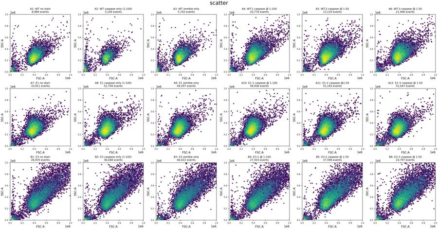
{"i":1,"status":"fulfilled"}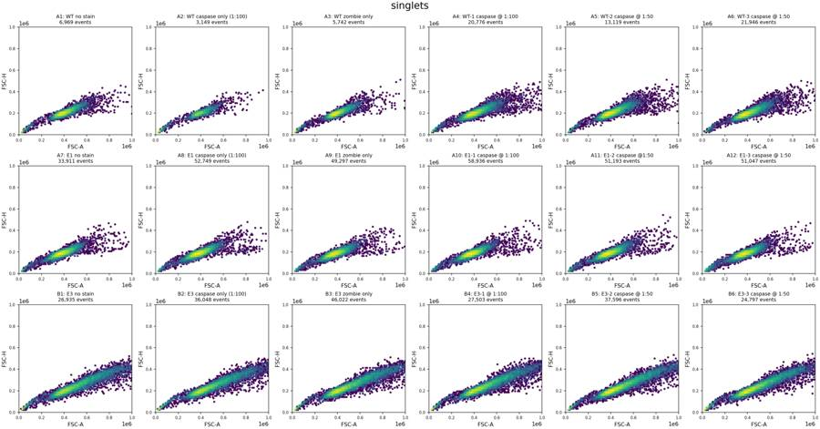
{"i":2,"status":"fulfilled"}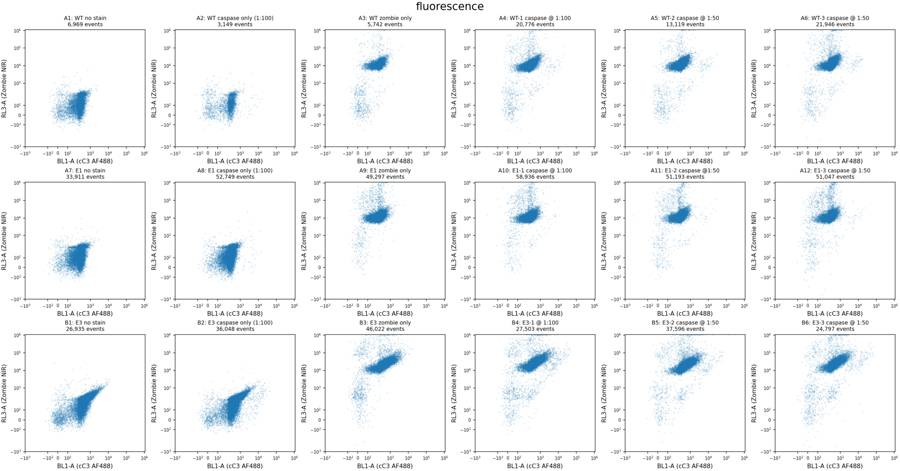
{"i":3,"status":"fulfilled"}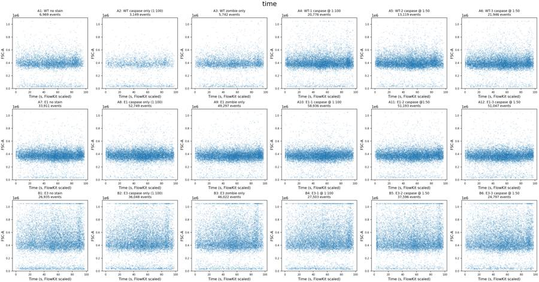
tool call · exec
text(await tools.exec_command({cmd:"python - <<'PY'\np='/task/outputs/explore.py'\ns=open(p).read().replace(\"s.get_channel_events('Time',source='raw')\",\"s.get_channel_events(s.get_channel_index('Time'),source='raw')\")\nopen(p,'w').write(s)\nPY\npython /task/outputs/explore.py","yield_time_ms":10000,"max_output_tokens":2000}));
tool output
Script completed
Wall time 10.2 seconds
Output:
{"chunk_id":"80a96a","wall_time_seconds":10.000707938,"session_id":79172,"original_token_count":0,"output":""}tool call · exec
text(await tools.exec_command({cmd:"python - <<'PY'\nimport flowkit as fk, inspect\nprint(inspect.signature(fk.GatingStrategy.add_gate))\nprint(inspect.getsource(fk.GatingStrategy.add_gate)[:5000])\nPY","max_output_tokens":3000}));
image((await tools.view_image({path:"/task/outputs/qc_rates.png"})).image_url);
tool output
Script completed Wall time 1.3 seconds Output:
{"chunk_id":"cc9f5a","wall_time_seconds":1.148879035,"exit_code":0,"original_token_count":896,"output":"(self, gate, gate_path, sample_id=None)\n def add_gate(self, gate, gate_path, sample_id=None):\n \"\"\"\n Add a gate to the gating strategy, see `gates` module. The gate ID and gate path\n must be unique in the gating strategy. Custom sample gates may be added by specifying\n an optional sample ID. Note, the gate & gate path must already exist prior to adding\n custom sample gates.\n\n :param gate: instance from a subclass of the Gate class\n :param gate_path: complete ordered tuple of gate names for unique set of gate ancestors\n :param sample_id: text string for specifying given gate as a custom Sample gate\n\n :return: None\n \"\"\"\n if not isinstance(gate, Gate):\n raise TypeError(\"gate must be a sub-class of the Gate class\")\n\n # Verify gate_path is a tuple, else user gets a cryptic error for\n # something that is simple to fix\n if not isinstance(gate_path, tuple):\n raise TypeError(\"gate_path must be a tuple not %s\" % str(type(gate_path)))\n\n # make string representation of parent path, used for anytree Resolver later\n parent_abs_gate_path = \"/\" + \"/\".join(gate_path)\n\n # Verify gate name is not \".\" or \"..\" as these are incompatible w/ the\n # current version of anytree (see open issue https://github.com/c0fec0de/anytree/issues/269)\n if gate.gate_name in ['.', '..']:\n raise GateTreeError(\n \"Gate name '%s' is incompatible with FlowKit. Gate was found in path: %s\" %\n (gate.gate_name, parent_abs_gate_path)\n )\n\n # We need the parent gate (via its node) for 2 reasons:\n # 1) To verify the parent exists when creating a new node\n # 2) Verify the parent is NOT a QuadrantGate, as only\n # Quadrants of a QuadrantGate can be a parent.\n try:\n parent_node = self.resolver.get(self._gate_tree, parent_abs_gate_path)\n except anytree.ResolverError:\n # this should never happen unless someone messed with the gate tree\n raise GateTreeError(\"Parent gate %s doesn't exist\" % parent_abs_gate_path)\n\n # If parent is root, then there is no parent gate\n if parent_node.name != 'root':\n if isinstance(parent_node.gate, fk_gates.QuadrantGate):\n raise GateTreeError(\n \"Parent gate %s is a QuadrantGate and cannot be used as a parent gate directly. \"\n \"Only an individual Quadrant can be used as a parent.\"\n )\n\n # determine if gate already exists with name and path\n abs_gate_path = list(gate_path) + [gate.gate_name]\n abs_gate_path = \"/\" + \"/\".join(abs_gate_path)\n try:\n node = self.resolver.get(self._gate_tree, abs_gate_path)\n except anytree.ResolverError:\n # this is expected if the gate doesn't already exist\n node = None\n\n if node is not None:\n # A node was found. If no sample ID is given, the gate\n # already exists and is the template gate.\n if sample_id is None:\n raise GateTreeError(\"Gate %s already exists\" % abs_gate_path)\n else:\n # Attempt to create sample custom gate, GateNode.add_gate will\n # raise a GateTreeError if it already exists.\n node.add_custom_gate(sample_id, gate)\n else:\n # We need to create a new node in the tree.\n GateNode(gate, parent_node)\n self._rebuild_dag()\n\n"}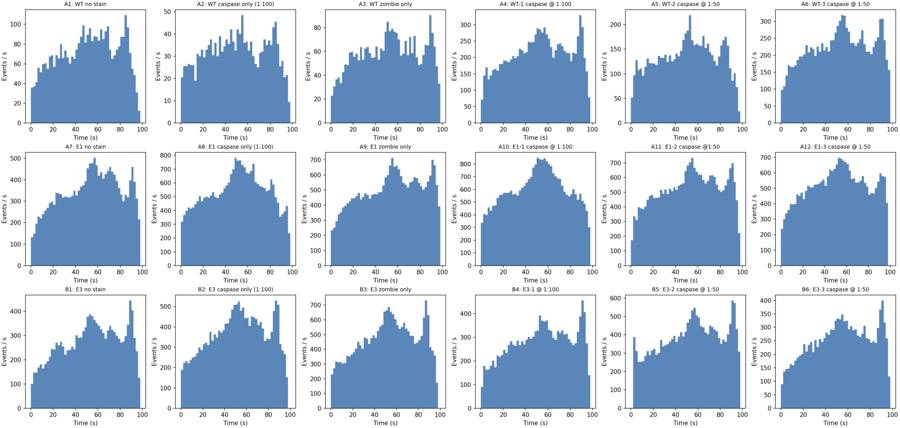
10
agent
The controls show two features that matter for interpretation: caspase staining shifts BL1 only slightly, and E3 has higher green autofluorescence even without the antibody. I’ll compare each stained condition with its matching Zombie-only control. Acquisition rates vary similarly across the plate; I’m checking whether any well has a distinct quality failure.
tool call · exec
text(await tools.exec_command({cmd:"cat > /task/outputs/analyse.py <<'PY'\nfrom pathlib import Path\nimport json\nimport flowkit as fk\nimport numpy as np\nimport pandas as pd\nimport matplotlib\nmatplotlib.use('Agg')\nimport matplotlib.pyplot as plt\nfrom matplotlib.patches import Polygon\n\nOUT=Path('/task/outputs')\nLAYOUT=pd.read_csv('/task/inputs/plate_layout.csv')\nCELLS_VERTICES=[(180000,70000),(350000,70000),(1040000,230000),(1040000,1040000),(550000,1040000),(180000,400000)]\nSINGLETS_VERTICES=[(180000,105000),(350000,150000),(600000,220000),(900000,300000),(1040000,350000),(1040000,500000),(800000,420000),(550000,340000),(350000,250000),(180000,160000)]\nLIVE_CUTOFF=60000.\nMARKER_CUTOFF=1500.\n\ndef dim(ch,lo=None,hi=None):\n return fk.Dimension(ch,compensation_ref='uncompensated',range_min=lo,range_max=hi)\n\ndef make_strategy(marker_cutoff=MARKER_CUTOFF,live_cutoff=LIVE_CUTOFF):\n gs=fk.GatingStrategy()\n gs.add_gate(fk.gates.PolygonGate('cells',[dim('FSC-A'),dim('SSC-A')],CELLS_VERTICES),('root',))\n gs.add_gate(fk.gates.PolygonGate('singlets',[dim('FSC-A'),dim('FSC-H')],SINGLETS_VERTICES),('root','cells'))\n gs.add_gate(fk.gates.RectangleGate('live',[dim('RL3-A',hi=live_cutoff)]),('root','cells','singlets'))\n gs.add_gate(fk.gates.RectangleGate('caspase_positive',[dim('BL1-A',lo=marker_cutoff)]),('root','cells','singlets','live'))\n gs.add_gate(fk.gates.RectangleGate('caspase_positive_all_singlets',[dim('BL1-A',lo=marker_cutoff)]),('root','cells','singlets'))\n gs.add_gate(fk.gates.RectangleGate('zombie_high',[dim('RL3-A',lo=live_cutoff)]),('root','cells','singlets'))\n gs.add_gate(fk.gates.RectangleGate('caspase_positive_zombie_high',[dim('BL1-A',lo=marker_cutoff)]),('root','cells','singlets','zombie_high'))\n for ch in ['FSC','SSC','BL1','RL3']:\n gs.add_gate(fk.gates.RectangleGate('qc_'+ch.lower()+'_ceiling',[dim(ch+'-A',lo=1040000)]),('root',))\n return gs\n\nPOPS=[('cells','cells','all_events'),('singlets','singlets','cells'),('live','live','singlets'),('caspase_positive','marker_positive','live'),('caspase_positive_all_singlets','other','singlets'),('zombie_high','other','singlets'),('caspase_positive_zombie_high','other','zombie_high')]+[('qc_'+x+'_ceiling','other','all_events') for x in ['fsc','ssc','bl1','rl3']]\n\ndef run():\n samples={r.well:fk.Sample('/task/inputs/raw/'+r.file) for r in LAYOUT.itertuples()}\n gs=make_strategy()\n with open(OUT/'gates.xml','wb') as handle: fk.export_gatingml(gs,handle)\n gs=fk.parse_gating_xml(str(OUT/'gates.xml'))\n results={w:gs.gate_sample(s) for w,s in samples.items()}\n rows=[]; stats=[]\n for r in LAYOUT.itertuples():\n s=samples[r.well]; gr=results[r.well]; raw=s.get_events(source='raw')\n counts={'all_events':s.event_count,**{name:int(gr.get_gate_count(name)) for name,_,_ in POPS}}\n rows.append(dict(file=r.file,well=r.well,population='all_events',role='other',parent='none',count=s.event_count,pct_of_parent=np.nan))\n for name,role,parent in POPS:\n rows.append(dict(file=r.file,well=r.well,population=name,role=role,parent=parent,count=counts[name],pct_of_parent=100*counts[name]/counts[parent] if counts[parent] else np.nan))\n row={'well':r.well,'sample':r.sample,**counts,'live_pct':100*counts['live']/counts['singlets'],'caspase_pct':100*counts['caspase_positive']/counts['live']}\n for pop in ['cells','singlets','live']:\n e=raw[gr.get_gate_membership(pop)]\n for ch in ['FSC-A','FSC-H','FSC-W','BL1-A','RL3-A']:\n x=e[:,s.get_channel_index(ch)]\n for q,v in zip([1,5,25,50,75,90,95,99,99.5,99.9],np.percentile(x,[1,5,25,50,75,90,95,99,99.5,99.9])):\n row[pop+'_'+ch+'_q'+str(q)]=v\n stats.append(row)\n pd.DataFrame(rows,columns=['file','well','population','role','parent','count','pct_of_parent']).to_csv(OUT/'counts.csv',index=False)\n stats=pd.DataFrame(stats)\n stats.to_csv(OUT/'gated_qc_stats.csv',index=False)\n print(stats[['well','all_events','cells','singlets','live','caspase_positive','live_pct','caspase_pct','live_BL1-A_q50','live_BL1-A_q99','live_BL1-A_q99.5','singlets_RL3-A_q95','qc_fsc_ceiling','qc_ssc_ceiling','qc_bl1_ceiling','qc_rl3_ceiling']].round(3).to_string(index=False))\n for name,xch,ych,parent,vertices in [('cells','FSC-A','SSC-A',None,CELLS_VERTICES),('singlets','FSC-A','FSC-H','cells',SINGLETS_VERTICES),('width','FSC-A','FSC-W','cells',None),('live_caspase','BL1-A','RL3-A','singlets',None)]:\n fig,axs=plt.subplots(3,6,figsize=(21,11),constrained_layout=True)\n for ax,r in zip(axs.flat,LAYOUT.itertuples()):\n s=samples[r.well]; e=s.get_events(source='raw')\n if parent: e=e[results[r.well].get_gate_membership(parent)]\n if len(e)>10000:e=e[np.random.default_rng(41).choice(len(e),10000,replace=False)]\n x=e[:,s.get_channel_index(xch)]; y=e[:,s.get_channel_index(ych)]\n if name=='live_caspase':\n ax.scatter(x,y,s=1,alpha=.17,rasterized=True)\n ax.set_xscale('symlog',linthresh=150); ax.set_yscale('symlog',linthresh=150)\n ax.set(xlim=(-100,2e4),ylim=(-100,1.1e6))\n ax.axvline(MARKER_CUTOFF,color='red',lw=.8); ax.axhline(LIVE_CUTOFF,color='red',lw=.8)\n else:\n ax.hexbin(x,y,gridsize=65,bins='log',mincnt=1,cmap='viridis')\n ax.set(xlim=(0,1.1e6),ylim=(0,1.1e6 if name=='cells' else 600000 if name=='singlets' else 250))\n if vertices:ax.add_patch(Polygon(vertices,fill=False,edgecolor='red',lw=1.2))\n ax.set(xlabel=xch,ylabel=ych,title=f'{r.well}: {r.sample}')\n ax.title.set_fontsize(8);ax.tick_params(labelsize=7)\n fig.savefig(OUT/f'gating_{name}.png',dpi=150)\n plt.close(fig)\n fig,axs=plt.subplots(2,3,figsize=(15,9),constrained_layout=True)\n groups=[['A1','A2','A3','A4','A5','A6'],[
… [980 more characters not shown]tool output
Script completed
Wall time 10.2 seconds
Output:
{"chunk_id":"235458","wall_time_seconds":10.000920714,"session_id":79704,"original_token_count":0,"output":""}tool call · exec
text(await tools.write_stdin({session_id:79704,chars:"","yield_time_ms":1000,"max_output_tokens":6000}));
text(await tools.exec_command({cmd:"python - <<'PY'\nimport pandas as pd\np=pd.read_csv('/task/outputs/gated_qc_stats.csv')\nprint(p[['well','cells_FSC-W_q1','cells_FSC-W_q50','cells_FSC-W_q95','singlets_FSC-W_q1','singlets_FSC-W_q50','singlets_FSC-W_q95','singlets_RL3-A_q50','singlets_RL3-A_q90','singlets_RL3-A_q95','singlets_RL3-A_q99']].round(1).to_string(index=False))\nPY","max_output_tokens":3000}));
tool output
Script completed
Wall time 0.3 seconds
Output:
{"chunk_id":"1f2098","wall_time_seconds":0.000002807,"exit_code":0,"original_token_count":1022,"output":"well all_events cells singlets live caspase_positive live_pct caspase_pct live_BL1-A_q50 live_BL1-A_q99 live_BL1-A_q99.5 singlets_RL3-A_q95 qc_fsc_ceiling qc_ssc_ceiling qc_bl1_ceiling qc_rl3_ceiling\n A1 6969 6373 6217 6217 4 100.000 0.064 252.0 698.24 821.680 256.0 9 14 0 0\n A2 3149 2545 2478 2478 24 100.000 0.969 288.0 1470.98 3913.100 251.0 3 12 0 0\n A3 5742 5163 5005 4947 0 98.841 0.000 243.0 647.08 734.270 25619.0 9 14 0 6\n A4 20776 19718 18854 18634 106 98.833 0.569 288.0 982.35 1715.710 23630.3 69 48 0 19\n A5 13119 12592 12139 12032 84 99.119 0.698 312.0 1092.76 3876.365 25251.5 19 19 0 17\n A6 21946 21049 20111 19747 145 98.190 0.734 320.0 1122.54 3557.180 30284.5 41 31 0 42\n A7 33911 32533 30760 30760 14 100.000 0.046 262.0 674.41 794.615 254.0 18 33 0 0\n A8 52749 51054 47724 47724 105 100.000 0.220 275.0 753.00 938.000 249.0 38 55 0 0\n A9 49297 47463 44066 43328 21 98.325 0.048 254.0 661.00 800.095 26035.5 38 43 0 37\n A10 58936 56897 52641 51720 120 98.250 0.232 276.0 774.62 961.000 25448.0 60 62 0 65\n A11 51193 49111 45761 44965 106 98.261 0.236 293.0 786.00 943.180 26422.0 40 50 0 77\n A12 51047 48546 45043 44121 166 97.953 0.376 290.0 828.80 1106.000 27111.9 30 49 0 84\n B1 26935 23349 22191 22191 606 100.000 2.731 403.0 1909.10 2279.050 419.0 817 1001 0 0\n B2 36048 31684 30238 30238 1421 100.000 4.699 451.0 3604.23 7124.815 412.0 1094 1221 0 0\n B3 46022 40573 38565 37607 1026 97.516 2.728 395.0 1958.76 2357.880 47145.0 1769 1880 0 148\n B4 27503 24194 23128 22179 883 95.897 3.981 425.0 3520.78 6723.440 56862.3 964 1039 0 131\n B5 37596 33847 32183 31430 1465 97.660 4.661 474.0 2726.55 6099.895 41375.0 1400 1480 0 138\n B6 24797 22168 21049 20305 826 96.465 4.068 467.0 2779.60 5735.000 54094.6 701 840 0 97\n"}
{"chunk_id":"8fccea","wall_time_seconds":0.156888511,"exit_code":0,"original_token_count":922,"output":"well cells_FSC-W_q1 cells_FSC-W_q50 cells_FSC-W_q95 singlets_FSC-W_q1 singlets_FSC-W_q50 singlets_FSC-W_q95 singlets_RL3-A_q50 singlets_RL3-A_q90 singlets_RL3-A_q95 singlets_RL3-A_q99\n A1 103.0 118.0 134.0 103.0 118.0 133.0 114.0 221.4 256.0 327.8\n A2 102.0 118.0 133.0 102.0 117.0 132.0 118.0 218.0 251.0 336.9\n A3 104.0 118.0 134.0 104.0 118.0 133.0 12517.0 21660.6 25619.0 84086.5\n A4 103.0 120.0 138.0 103.0 119.0 135.0 11171.5 19233.4 23630.3 76337.4\n A5 103.0 119.0 136.0 103.0 119.0 135.0 12439.0 21272.6 25251.5 49691.8\n A6 104.0 120.0 136.0 103.0 120.0 135.0 13541.0 24139.0 30284.5 142815.7\n A7 105.0 121.0 135.0 105.0 121.0 134.0 120.0 222.0 254.0 321.0\n A8 105.0 122.0 136.0 105.0
… [2,071 more characters not shown]tool call · exec
for(const path of ["/task/outputs/gating_cells.png","/task/outputs/gating_singlets.png","/task/outputs/gating_live_caspase.png","/task/outputs/qc_gated_histograms.png"]){image((await tools.view_image({path})).image_url);}
tool output
Script completed Wall time 0.2 seconds Output:
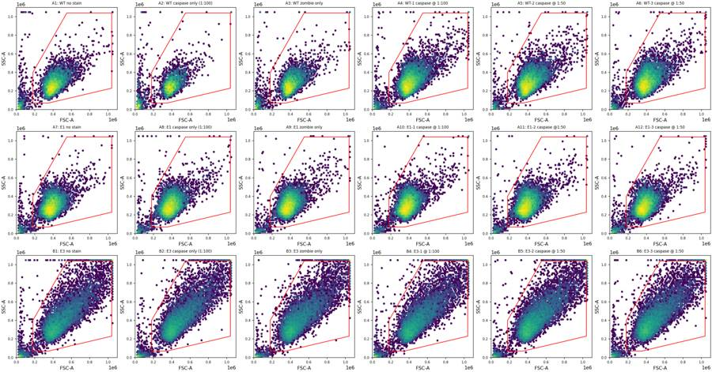
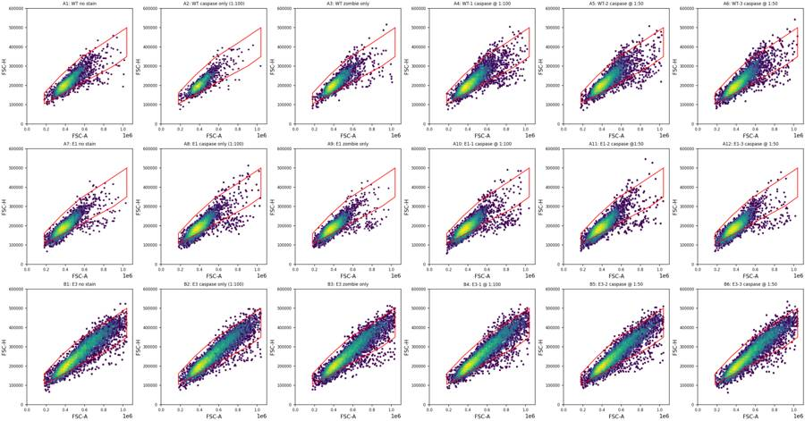
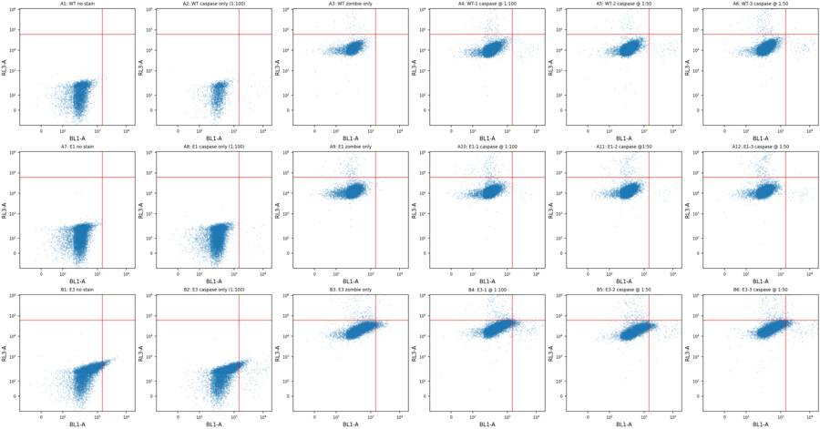
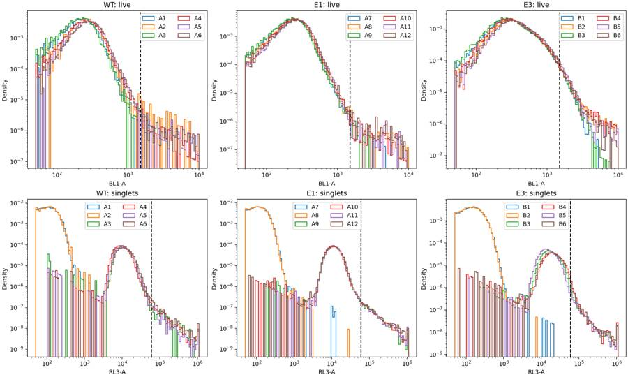
tool call · exec
text(await tools.exec_command({cmd:"python - <<'PY'\np='/task/outputs/analyse.py'\ns=open(p).read().replace('MARKER_CUTOFF=1500.','MARKER_CUTOFF=2500.')\nopen(p,'w').write(s)\nPY\npython /task/outputs/analyse.py","yield_time_ms":10000,"max_output_tokens":5000}));
text(await tools.web__run({search_query:[{q:'site.thermofisher.com CellEvent Caspase camptothecin 10 µM 4 hours flow cytometry'},{q:'H4 cells camptothecin caspase 3 apoptosis treatment concentration'}],response_length:"long"}));
tool output
Script completed
Wall time 11.2 seconds
Output:
{"chunk_id":"50b942","wall_time_seconds":10.000889043,"session_id":88624,"original_token_count":0,"output":""}
Caspase Assays - US (https://www.thermofisher.com/us/en/home/life-science/cell-analysis/cell-viability-and-regulation/apoptosis/caspase-assays.html)
citeturn1search0 [wordlim: 200] Crawled: today; Jurkat cells (T-cell leukemia, human) were treated with (A) DMSO or (B) 10 µM camptothecin for 3 hours before labeling with the CellEvent Caspase 3/7 Green Flow Cytometry kit. ... Jurkat cells were either treated with 10 μM camptothecin for 4 hours at 37ºC and 5% CO2 and stained with the FLICA reagent for caspase-3 and -7 and propidium iodide, both from the Vybrant FAM Caspase-3 and -7 Assay Kit.
##
Real-time, no-wash caspase-3/7 assay for flow cytometry
The CellEvent Caspase-3/7 Green flow cytometry assay allows for the detection of activated caspase-3 and caspase-7 in apoptotic cells. Cell-permeant CellEvent Caspase-3/7 detection reagent consists of a four-amino acid peptide (DEVD) conjugated to a nucleic acid-binding dye. During apoptosis, caspase-3 and caspase-7 proteins are activated and able to cleave the caspase 3/7 recognition sequence encoded in the DEVD peptide. Cleavage of the recognition sequence and binding of DNA by the reagent labels the apoptotic cells with a bright, fluorogenic signal. When used together with the appropriate SYTOX dead cell stain, apoptotic cells can be easily discriminated from live and necrotic cells (Figure 6).
Figure 6. Caspase activity detection in Jurkat cells using the CellEvent Caspase-3/7 Green Flow Cytometry Assay Kit on the Attune Flow Cytometer. Jurkat cells (T-cell leukemia, human) were treated with (A) DMSO or (B) 10 µM camptothecin for 3 hours before labeling with the CellEvent Caspase 3/7 Green Flow Cytometry kit. Stained samples were analyzed on the Attune Acoustic Focusing Cytometer equipped with a 488-nm laser, and fluorescence emission was collected using a 530/30 BP filter for CellEvent Caspase 3/7 Green Detection Reagent and a 690/50BP filter for SYTOX AADvanced stain, respectively. Note that the treated cells have a higher percentage of apoptotic cells (panel B) than the basal level of apoptosis seen in the control cells (panel A). A = apoptotic cells, V = viable cells, N = necrotic cells.
##
End-point caspase assays for flow cytometry
The Vybrant FAM Caspase Assay Kits, also known as the Vybrant FLICA Caspase Apoptosis Assay Kits, are easy to use and do not require the need for special buffers to lyse or permeabilize the cell membranes. Simply add the reagent to your cell culture media, let it incubate 1–4 hours, wash the cells, and analyze (Figure 7).
Figure 7.Detecting active caspases in apoptotic cells using the Vybrant FAM Caspase Assay Kits. Unbound FLICA reagent diffuses out of the cell and is washed away. The green-fluorescent signal is a direct measure of the amount of active caspase that was present at the time the inhibitor was added.
These assays employ the fluorescent inhibitor of caspases (FLICA) methodology. The FLICA reagent, a caspase inhibitor, binds covalently and irreversibly to the reactive cysteines of active caspases. This binding inhibits further enzymatic activity and makes this an end point assay for caspase activity (Figure 8). Vybrant FAM Caspase Assay Kits allow for the accurate detection of active caspases in living cells, are more reliable than annexin V, and simpler to use than TUNEL assays.
Figure 8. Detection of active caspases in living cells by flow cytometry. Jurkat cells were either treated with 10 μM camptothecin for 4 hours at 37ºC and 5% CO2 and stained with the FLICA reagent for caspase-3 and -7 and propidium iodide, both from the Vybrant FAM Caspase-3 and -7 Assay Kit. Samples were analyzed on a flow cytometer with 488 nm excitation using 530 nm bandpass and 670 nm longpass emission filters.
--------------------------------------------------------------------------------
USER GUIDE
CellEvent™ Caspase-3/7 Green Flow Cytom (https://www.thermofisher.com/TFS-Assets/LSG/manuals/cellevent_caspase_3_7_grn_flow_cytometry_assay_kit_man.pdf)
citeturn1search12 [wordlim: 200] Published: 8 months ago; Safety Data Sheets (SDSs) are available from thermofisher.com/support. ... Figure 1 Flow cytometry analysis with the CellEvent™ Caspase-3/7 Green Flow Cytometry Assay Kit.
Jurkat cells (T-cell leukemia, human) were treated with (A) DMSO or (B) 10 µM camptothecin for 3 hours before labeling with the CellEvent
During apoptosis,
caspase-3 and caspase-7 proteins are activated and are able to cleave the caspase 3/7 recognition sequence encoded in the DEVD
peptide. Cleavage of the recognition sequence and binding of DNA by the reagent labels apoptotic cells with a bright, fluorogenic signal.
When used together with the SYTOX
™ AADvanced
™ Dead Cell Stain, apoptotic cells can easily be discriminated from live and necrotic
cells (see Figure 1).
Figure 1 Flow cytometry analysis with the CellEvent™ Caspase-3/7 Green Flow Cytometry Assay Kit.
Jurkat cells (T-cell leukemia, human) were treated with (A) DMSO or (B) 10 µM camptothecin for 3 hours before labeling with the CellEvent
™
Caspase-3/7 Green Flow Cytometry Assay Kit. Stained samples were analyzed on the Attune
™ Acoustic Focusing Cytometer equipped with a
488‑nm laser, and fluorescence emission was collected using a 530/30 bandpass filter for CellEvent
™ Caspase-3/7 Green Detection Reagent and
a 690/50 bandpass filter for SYTOX
™ AADvanced
™ Dead Cell Stain, respectively. --------------------------------------------------------------------------------
Chromatin Condensation & Membrane Permeability Dead Cell Apoptosis Kit with Hoechst 33342, YO-PRO™-1, and PI dyes, for flow cytometry - FAQs (https://www.thermofisher.com/order/catalog/product/V23201/faqs)
citeturn1search1 [wordlim: 200] Crawled: 2 weeks ago; ## What are the fluorescence excitation/emission maxima for the dyes contained in
… [23,568 more characters not shown]tool call · exec
const results=await Promise.allSettled([
tools.exec_command({cmd:"python - <<'PY'\nimport pandas as pd\ns=pd.read_csv('/task/outputs/gated_qc_stats.csv').set_index('well')\nfor line,wells,fmo in [('WT',['A4','A5','A6'],'A3'),('E1',['A10','A11','A12'],'A9'),('E3',['B4','B5','B6'],'B3')]:\n print(line, 'FMO=',s.loc[fmo,'caspase_pct'])\n for w in wells:\n r=s.loc[w]\n print(w, 'pos',r.caspase_positive,'live',r.live,'pct',r.caspase_pct,'corrected',r.caspase_pct-s.loc[fmo,'caspase_pct'],'all singlet pct',100*r.caspase_positive_all_singlets/r.singlets,'deadpos',r.caspase_positive_zombie_high,'dead',r.zombie_high)\nPY","max_output_tokens":3000}),
tools.web__run({open:[{ref_id:"https://pmc.ncbi.nlm.nih.gov/articles/PMC3585261/"}],response_length:"long"})
]);results.forEach(text);
tool output
Script completed
Wall time 0.9 seconds
Output:
{"status":"fulfilled","value":{"chunk_id":"939829","wall_time_seconds":0.155657272,"exit_code":0,"original_token_count":304,"output":"WT FMO= 0.0\nA4 pos 74 live 18634 pct 0.3971235376194054 corrected 0.3971235376194054 all singlet pct 0.3924896573671369 deadpos 0 dead 220\nA5 pos 70 live 12032 pct 0.581781914893617 corrected 0.581781914893617 all singlet pct 0.5766537606063102 deadpos 0 dead 107\nA6 pos 116 live 19747 pct 0.587431002177546 corrected 0.587431002177546 all singlet pct 0.5867435731689126 deadpos 2 dead 364\nE1 FMO= 0.004615952732644\nA10 pos 88 live 51720 pct 0.1701469450889404 corrected 0.1655309923562964 all singlet pct 0.17476871639976443 deadpos 4 dead 921\nA11 pos 86 live 44965 pct 0.1912598687868342 corrected 0.1866439160541902 all singlet pct 0.19230348987128779 deadpos 2 dead 796\nA12 pos 130 live 44121 pct 0.2946442737018653 corrected 0.2900283209692213 all singlet pct 0.29305330462002976 deadpos 2 dead 922\nE3 FMO= 0.3775892785917515\nB4 pos 336 live 22179 pct 1.514946571080752 corrected 1.1373572924890003 all singlet pct 1.6214112763749569 deadpos 39 dead 949\nB5 pos 383 live 31430 pct 1.2185809735921094 corrected 0.8409916950003579 all singlet pct 1.2397849796476401 deadpos 16 dead 753\nB6 pos 242 live 20305 pct 1.1918246737256832 corrected 0.8142353951339317 all singlet pct 1.268468810869875 deadpos 25 dead 744\n"}}
{"status":"fulfilled","value":"Altered Processing of Amyloid Precursor Protein in Cells Undergoing Apoptosis - PMC (https://pmc.ncbi.nlm.nih.gov/articles/PMC3585261/)\nciteturn2view0 [wordlim: 200] Crawled: today; Content type: text/html; Source: open({\"ref_id\":\"https://pmc.ncbi.nlm.nih.gov/articles/PMC3585261/\",\"lineno\":null}); Total lines: 434\nL0: 【0†Skip to main content】\nL1: \nL2: 【1†Image†cdn.ncbi.nlm.nih.gov】 Search\nL3: \nL4: 【2†Image†cdn.ncbi.nlm.nih.gov】 Log in 【3†Image†cdn.ncbi.nlm.nih.gov】 【4†Image†cdn.ncbi.nlm.nih.gov】\nL5: \nL6: * 【5†Dashboard†www.ncbi.nlm.nih.gov】\nL7: * 【6†Publications†www.ncbi.nlm.nih.gov】\nL8: * 【7†Account settings†www.ncbi.nlm.nih.gov】\nL9: * [Button: Log out ]\nL10: \nL11: Search… [Input: Search NCBI] Search NCBI\nL12: \nL13: Primary site navigation\nL14: \nL15: 【8†Image: Close†cdn.ncbi.nlm.nih.gov】\nL16: \nL17: Search [Input: Search NCBI]\nL18: \nL19: Logged in as:\nL20: * 【5†Dashboard†www.ncbi.nlm.nih.gov】\nL21: * 【6†Publications†www.ncbi.nlm.nih.gov】\nL22: * 【7†Account settings†www.ncbi.nlm.nih.gov】\nL23: \nL24: [Button: Log in ]\nL25: \nL26: 【1†Image: PMC search open icon†cdn.ncbi.nlm.nih.gov】 【8†Image: PMC search close ison†cdn.ncbi.nlm.nih.gov】\nL27: \nL28: Search PMC Full-Text Archive [Input: Search PMC Full-Text Archive] Search in PMC 【9†Image: Search†cdn.ncbi.nlm.nih.gov】\nL29: \nL30: * 【10†Journal List】\nL31: * 【11†User Guide】\nL32: \nL33: [Button: PLoS One]\nL34: . 2013 Feb 28;8(2):e57979. doi: 【12†10.1371/journal.pone.0057979†doi.org】\nL35: # Altered Processing of Amyloid Precursor Protein in Cells Undergoing Apoptosis\nL36: \nL37: 【13†Tina Fiorelli†pubmed.ncbi.nlm.nih.gov】\nL38: \nL39: ### Tina Fiorelli\nL40: \nL41: ^{1}USF Health Byrd Alzheimer's Institute, University of South Florida, Tampa, Florida, United States of America\nL42: \nL43: ^{2}Department of Molecular Medicine, University of South Florida, Tampa, Florida, United States of America\nL44: \nL45: Find articles by 【13†Tina Fiorelli†pubmed.ncbi.nlm.nih.gov】\nL46: \nL47: ^{1,}^{2}, 【14†Lisa Kirouac†pubmed.ncbi.nlm.nih.gov】\nL48: ### Lisa Kirouac\nL49: \nL50: ^{1}USF Health Byrd Alzheimer's Institute, University of South Florida, Tampa, Florida, United States of America\nL51: \nL52: ^{2}Department of Molecular Medicine, University of South Florida, Tampa, Florida, United States of America\nL53: \nL54: Find articles by 【14†Lisa Kirouac†pubmed.ncbi.nlm.nih.gov】\nL55: \nL56: ^{1,}^{2}, 【15†Jaya Padmanabhan†pubmed.ncbi.nlm.nih.gov】\nL57: ### Jaya Padmanabhan\nL58: \nL59: ^{1}USF Health Byrd Alzheimer's Institute, University of South Florida, Tampa, Florida, United States of America\nL60: \nL61: ^{2}Department of Molecular Medicine, University of South Florida, Tampa, Florida, United States of America\nL62: \nL63: Find articles by 【15†Jaya Padmanabhan†pubmed.ncbi.nlm.nih.gov】\nL64: \nL65: ^{1,}^{2,}^{*}\nL66: \nL67: Editor: Anthony E Kline^{3}\nL68: \nL69: * [Button: Author information]\nL70: * [Button: Article notes]\nL71: * [Button: Copyright and License information]\nL72: ^{1}USF Health Byrd Alzheimer's Institute, University of South Florida, Tampa, Florida, United States of America\nL73: \nL74: ^{2}Department of Molecular Medicine, University of South Florida, Tampa, Florida, United States of America\nL75: \nL76: ^{3}University of Pittsburgh, United States of America\nL77: \nL78: ^{✉}\nL79: \nL80: * E-mail: jpadmana@health.usf.edu\nL81: \nL82: Competing Interests: The authors have declared that no competing interests exist.\nL83: Conceived and designed the experiments: JP. Performed the experiments: TF LK JP. Analyzed the data: TF JP. Wrote the paper: TF JP.\nL84: #### Roles\nL85: \nL86: Anthony E Kline: Editor\nL87: \nL88: Received 2012 Sep 27; Accepted 2013 Jan 30; Collection date 2013.\nL89: \nL90: © 2013 Fiorelli et al\nL91: \nL92: This is an open-access article distributed under the terms of the Creative Commons Attribution License, which permits unrestricted use, distribution, and reproduction in any medium, provided the original author and source are properly credited.\nL93: \nL94: 【16†PMC Copyright notice】\nL95: \nL96: PMCID: PMC3585261 PMID: 【17†23469123†pubmed.ncbi.nlm.nih.gov】\nL97: ## Abstract\nL98: Altered proteolysis of amyloid precursor protein is an important determinant of pathology development in Alzheimer's disease. Here, we describe the detection of two novel fragments of amyloid precursor protein in H4 neuroglioma cells undergoing apoptosis. Immunoreactivity of these 25–35 kDa fragments to two different amyloid precursor protein antibodies s
… [27,624 more characters not shown]15
agent
With a common threshold set above the controls’ green fluorescence tails, the stained wells contain a small marker-positive fraction. E3 is higher than WT, while E1 is lower, and 1:50 does not improve the readout consistently. No well warrants exclusion so far; E3 has some scatter saturation that I’ll flag. The main limitation is the absence of an induced positive control to distinguish low basal activity from poor assay sensitivity.
tool call · exec
text(await tools.apply_patch("*** Begin Patch\n*** Update File: /task/outputs/analyse.py\n@@\n gs.add_gate(fk.gates.RectangleGate('caspase_positive_zombie_high',[dim('BL1-A',lo=marker_cutoff)]),('root','cells','singlets','zombie_high'))\n+ for cutoff in [2000,3000]:\n+ gs.add_gate(fk.gates.RectangleGate('sensitivity_caspase_'+str(cutoff),[dim('BL1-A',lo=cutoff)]),('root','cells','singlets','live'))\n+ for cutoff in [40000,80000]:\n+ name='sensitivity_live_'+str(cutoff)\n+ gs.add_gate(fk.gates.RectangleGate(name,[dim('RL3-A',hi=cutoff)]),('root','cells','singlets'))\n+ gs.add_gate(fk.gates.RectangleGate('sensitivity_caspase_live_'+str(cutoff),[dim('BL1-A',lo=marker_cutoff)]),('root','cells','singlets',name))\n@@\n POPS=[('cells','cells','all_events'),('singlets','singlets','cells'),('live','live','singlets'),('caspase_positive','marker_positive','live'),('caspase_positive_all_singlets','other','singlets'),('zombie_high','other','singlets'),('caspase_positive_zombie_high','other','zombie_high')]+[('qc_'+x+'_ceiling','other','all_events') for x in ['fsc','ssc','bl1','rl3']]\n+POPS += [('sensitivity_caspase_'+str(c),'other','live') for c in [2000,3000]]\n+for c in [40000,80000]:\n+ POPS += [('sensitivity_live_'+str(c),'other','singlets'),('sensitivity_caspase_live_'+str(c),'other','sensitivity_live_'+str(c))]\n*** End Patch"));
text(await tools.exec_command({cmd:"python /task/outputs/analyse.py","yield_time_ms":10000,"max_output_tokens":5000}));
tool output
Script completed
Wall time 10.2 seconds
Output:
{}
{"chunk_id":"aa501b","wall_time_seconds":10.0012256,"session_id":67558,"original_token_count":0,"output":""}tool call · exec
text(await tools.exec_command({cmd:"python - <<'PY'\nimport pandas as pd\nr=pd.read_csv('/task/outputs/raw_qc_stats.csv');s=pd.read_csv('/task/outputs/gated_qc_stats.csv')\nprint(r[['well','FSC-A_q100','SSC-A_q100','BL1-A_q100','RL3-A_q100']].to_string(index=False))\nprint(s[['well','caspase_positive','caspase_pct']].to_string(index=False))\nPY","max_output_tokens":3000}));
tool output
Script completed
Wall time 0.3 seconds
Output:
{"chunk_id":"d88237","wall_time_seconds":0.160814838,"exit_code":0,"original_token_count":423,"output":"well FSC-A_q100 SSC-A_q100 BL1-A_q100 RL3-A_q100\n A1 1048575.0 1048575.0 2326.0 5298.0\n A2 1048575.0 1048575.0 16263.0 4339.0\n A3 1048575.0 1048575.0 4054.0 1048575.0\n A4 1048575.0 1048575.0 20046.0 1048575.0\n A5 1048575.0 1048575.0 29179.0 1048575.0\n A6 1048575.0 1048575.0 41920.0 1048575.0\n A7 1048575.0 1048575.0 4492.0 12789.0\n A8 1048575.0 1048575.0 34919.0 47198.0\n A9 1048575.0 1048575.0 10482.0 1048575.0\n A10 1048575.0 1048575.0 20786.0 1048575.0\n A11 1048575.0 1048575.0 282555.0 1048575.0\n A12 1048575.0 1048575.0 36379.0 1048575.0\n B1 1048575.0 1048575.0 20396.0 27332.0\n B2 1048575.0 1048575.0 80914.0 19853.0\n B3 1048575.0 1048575.0 16526.0 1048575.0\n B4 1048575.0 1048575.0 50990.0 1048575.0\n B5 1048575.0 1048575.0 126657.0 1048575.0\n B6 1048575.0 1048575.0 223049.0 1048575.0\nwell caspase_positive caspase_pct\n A1 0 0.000000\n A2 18 0.726392\n A3 0 0.000000\n A4 74 0.397124\n A5 70 0.581782\n A6 116 0.587431\n A7 2 0.006502\n A8 76 0.159249\n A9 2 0.004616\n A10 88 0.170147\n A11 86 0.191260\n A12 130 0.294644\n B1 73 0.328962\n B2 473 1.564257\n B3 142 0.377589\n B4 336 1.514947\n B5 383 1.218581\n B6 242 1.191825\n"}tool call · exec
text(await tools.apply_patch("*** Begin Patch\n*** Update File: /task/outputs/analyse.py\n@@\n- gs.add_gate(fk.gates.RectangleGate('qc_'+ch.lower()+'_ceiling',[dim(ch+'-A',lo=1040000)]),('root',))\n+ gs.add_gate(fk.gates.RectangleGate('qc_'+ch.lower()+'_ceiling',[dim(ch+'-A',lo=1048575)]),('root',))\n*** End Patch"));
text(await tools.exec_command({cmd:"python /task/outputs/analyse.py","yield_time_ms":10000,"max_output_tokens":5000}));
tool output
Script completed
Wall time 10.2 seconds
Output:
{}
{"chunk_id":"cd2e87","wall_time_seconds":10.000880046,"session_id":88843,"original_token_count":0,"output":""}tool call · exec
text(await tools.exec_command({cmd:"python - <<'PY'\nimport pandas as pd\nc=pd.read_csv('/task/outputs/counts.csv').pivot(index='well',columns='population',values='count')\nvariants=[('primary','caspase_positive','live'),('BL1>=2000','sensitivity_caspase_2000','live'),('BL1>=3000','sensitivity_caspase_3000','live'),('RL3<40000','sensitivity_caspase_live_40000','sensitivity_live_40000'),('RL3<80000','sensitivity_caspase_live_80000','sensitivity_live_80000'),('all singlets','caspase_positive_all_singlets','singlets')]\nfor label,num,den in variants:\n p=100*c[num]/c[den]\n vals={}\n for line,wells,ctrl in [('WT',['A4','A5','A6'],'A3'),('E1',['A10','A11','A12'],'A9'),('E3',['B4','B5','B6'],'B3')]:\n vals[line+'_100']=p[wells[0]]-p[ctrl]\n vals[line+'_50']=p[wells[1:]].mean()-p[ctrl]\n print(label, {k:round(v,4) for k,v in vals.items()})\nPY","max_output_tokens":3000}));
tool output
Script completed
Wall time 0.3 seconds
Output:
{"chunk_id":"9e8d71","wall_time_seconds":0.157279921,"exit_code":0,"original_token_count":174,"output":"primary {'WT_100': 0.3971, 'WT_50': 0.5846, 'E1_100': 0.1655, 'E1_50': 0.2383, 'E3_100': 1.1374, 'E3_50': 0.8276}\nBL1>=2000 {'WT_100': 0.4454, 'WT_50': 0.6265, 'E1_100': 0.1799, 'E1_50': 0.2516, 'E3_100': 1.2237, 'E3_50': 1.0653}\nBL1>=3000 {'WT_100': 0.3542, 'WT_50': 0.5519, 'E1_100': 0.145, 'E1_50': 0.2205, 'E3_100': 1.0071, 'E3_50': 0.6915}\nRL3<40000 {'WT_100': 0.3941, 'WT_50': 0.5612, 'E1_100': 0.157, 'E1_50': 0.2366, 'E3_100': 1.0709, 'E3_50': 0.7983}\nRL3<80000 {'WT_100': 0.3964, 'WT_50': 0.5831, 'E1_100': 0.1689, 'E1_50': 0.2388, 'E3_100': 1.2081, 'E3_50': 0.8499}\nall singlets {'WT_100': 0.3925, 'WT_50': 0.5817, 'E1_100': 0.1702, 'E1_50': 0.2381, 'E3_100': 1.2247, 'E3_50': 0.8574}\n"}tool call · exec
text(await tools.write_stdin({session_id:88843,chars:"","yield_time_ms":1000,"max_output_tokens":3000}));
text(await tools.exec_command({cmd:"python - <<'PY'\nimport pandas as pd\ns=pd.read_csv('/task/outputs/gated_qc_stats.csv')\nprint(s[['well','qc_fsc_ceiling','qc_ssc_ceiling','qc_bl1_ceiling','qc_rl3_ceiling']].to_string(index=False))\nPY","max_output_tokens":2000}));
tool output
Script completed
Wall time 0.3 seconds
Output:
{"chunk_id":"de4ad8","wall_time_seconds":0.000002755,"exit_code":0,"original_token_count":1022,"output":"well all_events cells singlets live caspase_positive live_pct caspase_pct live_BL1-A_q50 live_BL1-A_q99 live_BL1-A_q99.5 singlets_RL3-A_q95 qc_fsc_ceiling qc_ssc_ceiling qc_bl1_ceiling qc_rl3_ceiling\n A1 6969 6373 6217 6217 0 100.000 0.000 252.0 698.24 821.680 256.0 9 12 0 0\n A2 3149 2545 2478 2478 18 100.000 0.726 288.0 1470.98 3913.100 251.0 3 12 0 0\n A3 5742 5163 5005 4947 0 98.841 0.000 243.0 647.08 734.270 25619.0 9 14 0 6\n A4 20776 19718 18854 18634 74 98.833 0.397 288.0 982.35 1715.710 23630.3 67 46 0 19\n A5 13119 12592 12139 12032 70 99.119 0.582 312.0 1092.76 3876.365 25251.5 18 18 0 17\n A6 21946 21049 20111 19747 116 98.190 0.587 320.0 1122.54 3557.180 30284.5 38 28 0 41\n A7 33911 32533 30760 30760 2 100.000 0.007 262.0 674.41 794.615 254.0 17 33 0 0\n A8 52749 51054 47724 47724 76 100.000 0.159 275.0 753.00 938.000 249.0 35 52 0 0\n A9 49297 47463 44066 43328 2 98.325 0.005 254.0 661.00 800.095 26035.5 36 43 0 35\n A10 58936 56897 52641 51720 88 98.250 0.170 276.0 774.62 961.000 25448.0 59 56 0 62\n A11 51193 49111 45761 44965 86 98.261 0.191 293.0 786.00 943.180 26422.0 38 50 0 74\n A12 51047 48546 45043 44121 130 97.953 0.295 290.0 828.80 1106.000 27111.9 30 47 0 83\n B1 26935 23349 22191 22191 73 100.000 0.329 403.0 1909.10 2279.050 419.0 786 973 0 0\n B2 36048 31684 30238 30238 473 100.000 1.564 451.0 3604.23 7124.815 412.0 1054 1198 0 0\n B3 46022 40573 38565 37607 142 97.516 0.378 395.0 1958.76 2357.880 47145.0 1692 1830 0 148\n B4 27503 24194 23128 22179 336 95.897 1.515 425.0 3520.78 6723.440 56862.3 940 1004 0 130\n B5 37596 33847 32183 31430 383 97.660 1.219 474.0 2726.55 6099.895 41375.0 1355 1450 0 138\n B6 24797 22168 21049 20305 242 96.465 1.192 467.0 2779.60 5735.000 54094.6 676 818 0 94\n"}
{"chunk_id":"ca4a71","wall_time_seconds":0.147770283,"exit_code":0,"original_token_count":328,"output":"well qc_fsc_ceiling qc_ssc_ceiling qc_bl1_ceiling qc_rl3_ceiling\n A1 9 12 0 0\n A2 3 12 0 0\n A3 9 14 0 6\n A4 67 46 0 19\n A5 18 18 0 17\n A6 38 28 0 41\n A7 17 33 0 0\n A8 35 52 0 0\n A9 36 43 0 35\n A10 59 56 0 62\n A11 38 50 0 74\n A12 30 47 0 83\n B1 786 973 0 0\n B2 1054 1198 0 0\n B3 1692 1830 0 148\n B4 940 1004 0 130\n B5 1355 1450 0 138\n B6 676 818 0 94\n"}tool call · exec
text(await tools.exec_command({cmd:"cat > /task/outputs/summarise.py <<'PY'\nfrom pathlib import Path\nimport hashlib\nimport json\nimport platform\nimport flowkit as fk\nimport numpy as np\nimport pandas as pd\nimport matplotlib\nmatplotlib.use('Agg')\nimport matplotlib.pyplot as plt\nfrom matplotlib.lines import Line2D\nfrom analyse import CELLS_VERTICES, SINGLETS_VERTICES, LIVE_CUTOFF, MARKER_CUTOFF\n\nOUT=Path('/task/outputs')\nlayout=pd.read_csv('/task/inputs/plate_layout.csv')\ncounts=pd.read_csv(OUT/'counts.csv')\nc=counts.pivot(index='well',columns='population',values='count')\nstats=pd.read_csv(OUT/'gated_qc_stats.csv').set_index('well')\nrawstats=pd.read_csv(OUT/'raw_qc_stats.csv').set_index('well')\nrawpct=100*c.caspase_positive/c.live\nfmo={'WT':'A3','E1':'A9','E3':'B3'}\nconditions={\n 'WT_unstained':['A1'],'WT_caspase_only_1_100':['A2'],'WT_zombie_only':['A3'],\n 'WT_1_100':['A4'],'WT_1_50':['A5','A6'],\n 'E1_unstained':['A7'],'E1_caspase_only_1_100':['A8'],'E1_zombie_only':['A9'],\n 'E1_1_100':['A10'],'E1_1_50':['A11','A12'],\n 'E3_unstained':['B1'],'E3_caspase_only_1_100':['B2'],'E3_zombie_only':['B3'],\n 'E3_1_100':['B4'],'E3_1_50':['B5','B6']}\nprimary=['WT_1_100','WT_1_50','E1_1_100','E1_1_50','E3_1_100','E3_1_50']\ncondition_for_well={w:k for k,v in conditions.items() for w in v}\n\nflags=[]\nfor r in layout.itertuples():\n n=int(c.loc[r.well,'all_events'])\n if r.cell_line=='E3':\n nf=int(c.loc[r.well,'qc_fsc_ceiling']); ns=int(c.loc[r.well,'qc_ssc_ceiling'])\n issue='saturation'; decision='keep_with_note'\n evidence=(f'At the ADC ceiling 1048575: FSC-A {nf}/{n} ({100*nf/n:.3f}%), SSC-A {ns}/{n} ({100*ns/n:.3f}%); '\n f'BL1-A saturation 0/{n}. Common cells gate excludes the clipped scatter events; '\n f'{int(c.loc[r.well,\"live\"])} events remain in the live gate. Retain the analysable subset; large-cell representation may be biased.')\n elif r.well=='A2':\n issue='too_few_events'; decision='keep_with_note'\n evidence=(f'Low-yield antibody-only control: {n} total events, {int(c.loc[r.well,\"singlets\"])} singlets, '\n f'{int(c.loc[r.well,\"caspase_positive\"])} marker-positive events. Retain for qualitative single-stain checks; '\n 'rare-event precision is limited, and no Zombie dye was present. Not a dual-stained replicate.')\n else:\n issue='none';decision='keep';evidence=''\n flags.append(dict(file=r.file,well=r.well,issue_type=issue,evidence=evidence,decision=decision))\nflags=pd.DataFrame(flags,columns=['file','well','issue_type','evidence','decision'])\nflags.to_csv(OUT/'flags.csv',index=False)\nexcluded=flags.loc[flags.decision=='exclude','well'].tolist()\n\nwellrows=[]\nfor r in layout.itertuples():\n condition=condition_for_well[r.well]\n ctrl=fmo[r.cell_line]\n corrected=float(rawpct[r.well]-rawpct[ctrl]) if condition in primary else np.nan\n wellrows.append(dict(file=r.file,well=r.well,condition=condition,cell_line=r.cell_line,\n all_events=int(c.loc[r.well,'all_events']),cells=int(c.loc[r.well,'cells']),singlets=int(c.loc[r.well,'singlets']),\n live=int(c.loc[r.well,'live']),caspase_positive=int(c.loc[r.well,'caspase_positive']),\n raw_marker_percent=float(rawpct[r.well]),matched_zombie_only_well=ctrl if condition in primary else '',\n matched_background_percent=float(rawpct[ctrl]) if condition in primary else np.nan,\n background_subtracted_percentage_points=corrected,\n live_percent_of_singlets=100*c.loc[r.well,'live']/c.loc[r.well,'singlets'],\n bl1_median_in_live_gate=stats.loc[r.well,'live_BL1-A_q50'],\n qc_decision=flags.set_index('well').loc[r.well,'decision']))\nwellmetrics=pd.DataFrame(wellrows)\nwellmetrics.to_csv(OUT/'well_metrics.csv',index=False)\n\nsummary=[]\nfor condition,wells in conditions.items():\n wells=[w for w in wells if w not in excluded]\n line=condition.split('_')[0]\n values=rawpct[wells].to_numpy()\n if condition in primary:\n ctrl=fmo[line];values=values-float(rawpct[ctrl])\n norm=(f'y(w) = 100*caspase_positive(w)/live(w) - 100*caspase_positive({ctrl})/live({ctrl}); '\n f'matched {line} Zombie-only control; units=percentage points; no clipping')\n else:\n norm='none'\n summary.append(dict(condition=condition,wells=';'.join(wells),n_wells_used=len(wells),mean=float(np.mean(values)),\n sd=float(np.std(values,ddof=1)) if len(wells)>1 else np.nan,\n metric_definition='caspase_positive / live; 100 x fraction (%); after background subtraction, percentage points',\n normalisation_applied=norm))\nsummary=pd.DataFrame(summary,columns=['condition','wells','n_wells_used','mean','sd','metric_definition','normalisation_applied'])\nsummary.to_csv(OUT/'condition_summary.csv',index=False)\nsm=summary.set_index('condition')\n\nvariants=[('primary_BL1_2500_RL3_60000','caspase_positive','live'),\n ('BL1_2000','sensitivity_caspase_2000','live'),('BL1_3000','sensitivity_caspase_3000','live'),\n ('RL3_40000','sensitivity_caspase_live_40000','sensitivity_live_40000'),\n ('RL3_80000','sensitivity_caspase_live_80000','sensitivity_live_80000'),\n ('all_singlets','caspase_positive_all_singlets','singlets')]\nsensitivity=[]\nfor label,num,den in variants:\n p=100*c[num]/c[den]\n for cond in primary:\n wells=conditions[cond];ctrl=fmo[cond.split('_')[0]]\n values=p[wells]-p[ctrl]\n sensitivity.append(dict(variant=label,condition=cond,wells=';'.join(wells),numerator=num,denominator=den,\n matched_background_well=ctrl,background_percent=float(p[ctrl]),mean_background_subtracted_pp=values.mean(),\n sd_background_subtracted_pp=values.std(ddof=1) if len(wells)>1 else np.nan))\nsensitivity=pd.DataFrame(sensitivity)\nsensitivity.to_csv(OUT/'sensitivity_summary.csv',index=False)\n\ncomparisons=[]\nf
… [24,734 more characters not shown]tool output
Script completed
Wall time 2.8 seconds
Output:
{"chunk_id":"e258bb","wall_time_seconds":2.6519103189999997,"exit_code":0,"original_token_count":1205,"output":" condition wells n_wells_used mean sd metric_definition normalisation_applied\n WT_unstained A1 1 0.000000 NaN caspase_positive / live; 100 x fraction (%); after background subtraction, percentage points none\nWT_caspase_only_1_100 A2 1 0.726392 NaN caspase_positive / live; 100 x fraction (%); after background subtraction, percentage points none\n WT_zombie_only A3 1 0.000000 NaN caspase_positive / live; 100 x fraction (%); after background subtraction, percentage points none\n WT_1_100 A4 1 0.397124 NaN caspase_positive / live; 100 x fraction (%); after background subtraction, percentage points y(w) = 100*caspase_positive(w)/live(w) - 100*caspase_positive(A3)/live(A3); matched WT Zombie-only control; units=percentage points; no clipping\n WT_1_50 A5;A6 2 0.584606 0.003995 caspase_positive / live; 100 x fraction (%); after background subtraction, percentage points y(w) = 100*caspase_positive(w)/live(w) - 100*caspase_positive(A3)/live(A3); matched WT Zombie-only control; units=percentage points; no clipping\n E1_unstained A7 1 0.006502 NaN caspase_positive / live; 100 x fraction (%); after background subtraction, percentage points none\nE1_caspase_only_1_100 A8 1 0.159249 NaN caspase_positive / live; 100 x fraction (%); after background subtraction, percentage points none\n E1_zombie_only A9 1 0.004616 NaN caspase_positive / live; 100 x fraction (%); after background subtraction, percentage points none\n E1_1_100 A10 1 0.165531 NaN caspase_positive / live; 100 x fraction (%); after background subtraction, percentage points y(w) = 100*caspase_positive(w)/live(w) - 100*caspase_positive(A9)/live(A9); matched E1 Zombie-only control; units=percentage points; no clipping\n E1_1_50 A11;A12 2 0.238336 0.073104 caspase_positive / live; 100 x fraction (%); after background subtraction, percentage points y(w) = 100*caspase_positive(w)/live(w) - 100*caspase_positive(A9)/live(A9); matched E1 Zombie-only control; units=percentage points; no clipping\n E3_unstained B1 1 0.328962 NaN caspase_positive / live; 100 x fraction (%); after background subtraction, percentage points none\nE3_caspase_only_1_100 B2 1 1.564257 NaN caspase_positive / live; 100 x fraction (%); after background subtraction, percentage points none\n E3_zombie_only B3 1 0.377589 NaN caspase_positive / live; 100 x fraction (%); after background subtraction, percentage points none\n E3_1_100 B4 1 1.137357 NaN caspase_positive / live; 100 x fraction (%); after background subtraction, percentage points y(w) = 100*caspase_positive(w)/live(w) - 100*caspase_positive(B3)/live(B3); matched E3 Zombie-only control; units=percentage points; no clipping\n E3_1_50 B5;B6 2 0.827614 0.018920 caspase_positive / live; 100 x fraction (%); after background subtraction, percentage points y(w) = 100*caspase_positive(w)/live(w) - 100*caspase_positive(B3)/live(B3); matched E3 Zombie-only control; units=percentage points; no clipping\n\nExcluded wells: []\n"}tool call · exec
image((await tools.view_image({path:"/task/outputs/figure.png"})).image_url);
text(await tools.exec_command({cmd:"python - <<'PY'\nfrom pathlib import Path\nimport flowkit as fk\ns=fk.parse_gating_xml('/task/outputs/gates.xml')\nprint(s.get_gate_ids())\nprint(Path('/task/outputs/gates.xml').read_text()[:3500])\nPY","max_output_tokens":3000}));
tool output
Script completed Wall time 1.1 seconds Output:
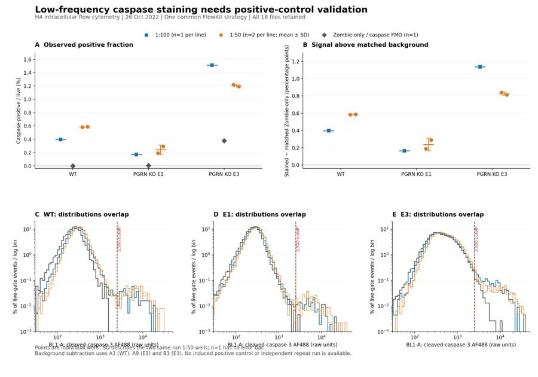
{"chunk_id":"81adbc","wall_time_seconds":0.907514731,"exit_code":0,"original_token_count":1105,"output":"[('qc_fsc_ceiling', ('root',)), ('qc_ssc_ceiling', ('root',)), ('qc_bl1_ceiling', ('root',)), ('qc_rl3_ceiling', ('root',)), ('cells', ('root',)), ('singlets', ('root', 'cells')), ('live', ('root', 'cells', 'singlets')), ('caspase_positive', ('root', 'cells', 'singlets', 'live')), ('sensitivity_caspase_2000', ('root', 'cells', 'singlets', 'live')), ('sensitivity_caspase_3000', ('root', 'cells', 'singlets', 'live')), ('caspase_positive_all_singlets', ('root', 'cells', 'singlets')), ('zombie_high', ('root', 'cells', 'singlets')), ('caspase_positive_zombie_high', ('root', 'cells', 'singlets', 'zombie_high')), ('sensitivity_live_40000', ('root', 'cells', 'singlets')), ('sensitivity_caspase_live_40000', ('root', 'cells', 'singlets', 'sensitivity_live_40000')), ('sensitivity_live_80000', ('root', 'cells', 'singlets')), ('sensitivity_caspase_live_80000', ('root', 'cells', 'singlets', 'sensitivity_live_80000'))]\n<?xml version='1.0' encoding='UTF-8'?>\n<gating:Gating-ML xmlns:gating=\"http://www.isac-net.org/std/Gating-ML/v2.0/gating\" xmlns:data-type=\"http://www.isac-net.org/std/Gating-ML/v2.0/datatypes\" xmlns:transforms=\"http://www.isac-net.org/std/Gating-ML/v2.0/transformations\">\n <gating:PolygonGate gating:id=\"cells\">\n <gating:dimension gating:compensation-ref=\"uncompensated\">\n <data-type:fcs-dimension data-type:name=\"FSC-A\"/>\n </gating:dimension>\n <gating:dimension gating:compensation-ref=\"uncompensated\">\n <data-type:fcs-dimension data-type:name=\"SSC-A\"/>\n </gating:dimension>\n <gating:vertex>\n <gating:coordinate data-type:value=\"180000\"/>\n <gating:coordinate data-type:value=\"70000\"/>\n </gating:vertex>\n <gating:vertex>\n <gating:coordinate data-type:value=\"350000\"/>\n <gating:coordinate data-type:value=\"70000\"/>\n </gating:vertex>\n <gating:vertex>\n <gating:coordinate data-type:value=\"1040000\"/>\n <gating:coordinate data-type:value=\"230000\"/>\n </gating:vertex>\n <gating:vertex>\n <gating:coordinate data-type:value=\"1040000\"/>\n <gating:coordinate data-type:value=\"1040000\"/>\n </gating:vertex>\n <gating:vertex>\n <gating:coordinate data-type:value=\"550000\"/>\n <gating:coordinate data-type:value=\"1040000\"/>\n </gating:vertex>\n <gating:vertex>\n <gating:coordinate data-type:value=\"180000\"/>\n <gating:coordinate data-type:value=\"400000\"/>\n </gating:vertex>\n </gating:PolygonGate>\n <gating:PolygonGate gating:id=\"singlets\" gating:parent_id=\"cells\">\n <gating:dimension gating:compensation-ref=\"uncompensated\">\n <data-type:fcs-dimension data-type:name=\"FSC-A\"/>\n </gating:dimension>\n <gating:dimension gating:compensation-ref=\"uncompensated\">\n <data-type:fcs-dimension data-type:name=\"FSC-H\"/>\n </gating:dimension>\n <gating:vertex>\n <gating:coordinate data-type:value=\"180000\"/>\n <gating:coordinate data-type:value=\"105000\"/>\n </gating:vertex>\n <gating:vertex>\n <gating:coordinate data-type:value=\"350000\"/>\n <gating:coordinate data-type:value=\"150000\"/>\n </gating:vertex>\n <gating:vertex>\n <gating:coordinate data-type:value=\"600000\"/>\n <gating:coordinate data-type:value=\"220000\"/>\n </gating:vertex>\n <gating:vertex>\n <gating:coordinate data-type:value=\"900000\"/>\n <gating:coordinate data-type:value=\"300000\"/>\n </gating:vertex>\n <gating:vertex>\n <gating:coordinate data-type:value=\"1040000\"/>\n <gating:coordinate data-type:value=\"350000\"/>\n </gating:vertex>\n <gating:vertex>\n <gating:coordinate data-type:value=\"1040000\"/>\n <gating:coordinate data-type:value=\"500000\"/>\n </gating:vertex>\n <gating:vertex>\n <gating:coordinate data-type:value=\"800000\"/>\n <gating:coordinate data-type:value=\"420000\"/>\n </gating:vertex>\n <gating:vertex>\n <gating:coordinate data-type:value=\"550000\"/>\n <gating:coordinate data-type:value=\"340000\"/>\n </gating:vertex>\n <gating:vertex>\n <gating:coordinate data-type:value=\"350000\"/>\n <gating:coordinate data-type:value=\"250000\"/>\n </gating:vertex>\n <gating:vertex>\n <gating:coordinate data-type:value=\"180000\"/>\n <gating:coordinate data-type:value=\"160000\"/>\n </gating:vertex>\n </gating:PolygonGate>\n <gating:RectangleGate gating:id=\"live\" gating:parent_id=\"singlets\">\n <gating:dimension gating:compensation-ref=\"uncompensated\" gating:max=\"60000.0\">\n <data-type:fcs\n"}22
agent
The main conclusions hold when I move the caspase and viability thresholds: E3 remains higher than WT, E1 remains lower, and 1:50 has no uniform advantage. I’ve saved the report, chart and tables. I’m now reloading the exported GatingML and checking every count and summary against the raw files.
tool call · exec
text(await tools.apply_patch("*** Begin Patch\n*** Update File: /task/outputs/summarise.py\n@@\n- metric_definition='caspase_positive / live; 100 x fraction (%); after background subtraction, percentage points',\n+ metric_definition='caspase_positive / live; 100 x fraction (% before subtraction; percentage points after subtraction)' if condition in primary else 'caspase_positive / live; 100 x fraction (%)',\n@@\n-gs=fig.add_gridspec(2,6,height_ratios=[1.05,1],left=.065,right=.985,bottom=.12,top=.86,hspace=.47,wspace=.85)\n+gs=fig.add_gridspec(2,6,height_ratios=[1.05,1],left=.065,right=.985,bottom=.16,top=.86,hspace=.47,wspace=.85)\n@@\n-fig.text(.065,.058,'Points are individual wells. SD describes the two same-run 1:50 wells; n=1 has no error bar.\\n'\n+fig.text(.065,.045,'Points are individual wells. SD describes the two same-run 1:50 wells; n=1 has no error bar.\\n'\n*** End Patch"));
text(await tools.exec_command({cmd:"cat > /task/outputs/validate.py <<'PY'\nfrom pathlib import Path\nfrom datetime import datetime, timezone\nimport hashlib\nimport json\nimport re\nimport xml.etree.ElementTree as ET\nimport numpy as np\nimport pandas as pd\nimport flowkit as fk\n\nO=Path('/task/outputs')\nlayout=pd.read_csv('/task/inputs/plate_layout.csv')\nc=pd.read_csv(O/'counts.csv')\nf=pd.read_csv(O/'flags.csv').fillna('')\ns=pd.read_csv(O/'condition_summary.csv')\na=json.loads((O/'answer.json').read_text())\ng=fk.parse_gating_xml(str(O/'gates.xml'))\nassert list(c.columns)==['file','well','population','role','parent','count','pct_of_parent']\nassert list(f.columns)==['file','well','issue_type','evidence','decision']\nassert list(s.columns)==['condition','wells','n_wells_used','mean','sd','metric_definition','normalisation_applied']\nassert len(layout)==18 and len(f)==18 and c.file.nunique()==18\nassert set(c.file)==set(f.file)==set(layout.file)\nassert len(c)==18*c.population.nunique()\nassert not c.duplicated(['file','population']).any()\nassert set(c.role)<=set(['other','cells','singlets','live','marker_positive'])\nassert set(f.issue_type)<=set(['none','clog','ran_dry','too_few_events','saturation','bad_control','mislabel','other'])\nassert set(f.decision)<=set(['keep','keep_with_note','exclude'])\nassert all(f.loc[f.issue_type=='none','decision']=='keep')\nfor row in f.itertuples():\n if row.issue_type!='none':assert re.search(r'\\d',row.evidence)\nfor role in ['cells','singlets','live','marker_positive']:\n rr=c[c.role==role]\n assert rr.population.nunique()==1 and len(rr)==18\nassert set(c.population)-{'all_events'}=={name for name,path in g.get_gate_ids()}\nfor name,path in g.get_gate_ids():\n assert re.fullmatch(r'[A-Za-z][A-Za-z0-9_]*',name)\n expected_parent=path[-1] if path[-1]!='root' else 'all_events'\n assert set(c.loc[c.population==name,'parent'])=={expected_parent}\nroot=ET.parse(O/'gates.xml').getroot()\nns='http://www.isac-net.org/std/Gating-ML/v2.0/gating'\nfor node in root:\n assert node.tag.split('}')[-1] in ['PolygonGate','RectangleGate','EllipsoidGate']\nfor node in root.iter('{'+ns+'}dimension'):\n assert node.attrib['{'+ns+'}compensation-ref']=='uncompensated'\n\ncomparisons=0\nmetadata=[]\nfor row in layout.itertuples():\n sample=fk.Sample('/task/inputs/raw/'+row.file)\n result=g.gate_sample(sample)\n rows=c[c.file==row.file].set_index('population')\n assert set(rows.well)=={row.well}\n assert f.loc[f.file==row.file,'well'].item()==row.well\n assert rows.loc['all_events','role']=='other'\n assert rows.loc['all_events','parent']=='none'\n assert pd.isna(rows.loc['all_events','pct_of_parent'])\n assert rows.loc['all_events','count']==sample.event_count\n for pop,r in rows.iterrows():\n assert int(r['count'])==r['count']\n if pop=='all_events':continue\n n=int(result.get_gate_count(pop));assert n==r['count'],(row.well,pop,n,r['count'])\n parent=int(rows.loc[r['parent'],'count'])\n assert n<=parent\n assert np.isclose(r.pct_of_parent,100*n/parent,rtol=1e-12,atol=1e-12) if parent else pd.isna(r.pct_of_parent)\n comparisons+=1\n # Verify channel, date, time and spillover statements in the report.\n assert sample.metadata['date']=='26-Oct-2022'\n assert sample.metadata['wellid']==row.well\n for i,v in [(2,'20'),(3,'290'),(4,'250'),(5,'350')]:assert sample.metadata[f'p{i}v']==v\n assert sample.pnn_labels[3]=='BL1-A' and sample.pnn_labels[4]=='RL3-A'\n spill=sample.metadata['spillover'].split(',');d=int(spill[0]);matrix=np.array(spill[1+d:],float).reshape(d,d)\n assert np.array_equal(matrix,np.eye(d))\n events=sample.get_events(source='raw');time=events[:,sample.get_channel_index('Time')]\n gapindex=np.argmax(np.diff(time))\n metadata.append({'well':row.well,'event_count':sample.event_count,'largest_time_gap_s':float(np.diff(time)[gapindex]),\n 'largest_gap_start_s':float(time[gapindex]),'largest_gap_end_s':float(time[gapindex+1])})\n\nwide=c.pivot(index='well',columns='population',values='count')\npct=100*wide.caspase_positive/wide.live\nall_used=[]\nfor row in s.itertuples():\n wells=row.wells.split(';')\n assert len(wells)==row.n_wells_used and len(set(wells))==len(wells)\n assert set(wells)<=set(layout.well)\n all_used.extend(wells)\n vals=pct[wells].to_numpy()\n if row.normalisation_applied!='none':\n match=re.search(r'caspase_positive\\((A3|A9|B3)\\)',row.normalisation_applied)\n assert match\n vals=vals-pct[match.group(1)]\n assert np.isclose(vals.mean(),row.mean,atol=1e-12)\n if len(vals)>1:assert np.isclose(vals.std(ddof=1),row.sd,atol=1e-12)\n else:assert pd.isna(row.sd)\nassert len(all_used)==18 and set(all_used)==set(layout.well)\nassert sorted(a['excluded_wells'])==sorted(f.loc[f.decision=='exclude','well'].tolist())\nassert set(a)=={'question','comparisons','overall_answer','assay_verdict','next_action','next_change','excluded_wells','caveats'}\nassert a['o
… [2,529 more characters not shown]tool output
Script completed
Wall time 4.3 seconds
Output:
{}
{"chunk_id":"bb0f8a","wall_time_seconds":4.151239698,"exit_code":0,"original_token_count":228,"output":"{\n \"status\": \"PASS\",\n \"verified_utc\": \"2026-11-10T17:19:59.814807+00:00\",\n \"flowkit_version\": \"1.2.3\",\n \"files\": 18,\n \"exported_gates\": 17,\n \"count_rows\": 324,\n \"gate_counts_reapplied_and_matched\": 306,\n \"all_event_counts_matched\": 18,\n \"condition_rows\": 15,\n \"flag_rows\": 18,\n \"excluded_wells\": [],\n \"checks\": [\n \"GatingML 2.0 parsed successfully\",\n \"All gate counts independently reproduced from raw FCS files\",\n \"Population parents, roles and percentages verified\",\n \"Conditions, well membership, means and sample SD verified\",\n \"Answer schema, comparison directions and exclusion list verified\",\n \"Required report headings verified\",\n \"All 18 identity spillover matrices and detector settings verified\",\n \"Input hashes unchanged\"\n ]\n}\nLargest gap: {'well': 'B5', 'event_count': 37596, 'largest_time_gap_s': 0.81, 'largest_gap_start_s': 1.089, 'largest_gap_end_s': 1.899}\n"}tool call · exec
image((await tools.view_image({path:"/task/outputs/figure.png"})).image_url);
text(await tools.exec_command({cmd:"ls -lh /task/outputs/gates.xml /task/outputs/counts.csv /task/outputs/flags.csv /task/outputs/condition_summary.csv /task/outputs/figure.png /task/outputs/report.md /task/outputs/answer.json /task/outputs/validation.json","max_output_tokens":2000}));
tool output
Script completed Wall time 0.1 seconds Output:
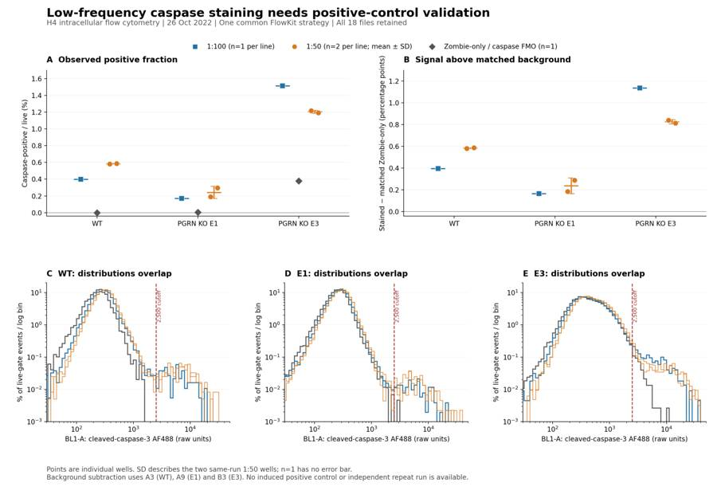
{"chunk_id":"5d9b05","wall_time_seconds":0.000003173,"exit_code":0,"original_token_count":136,"output":"-rw-r--r-- 1 root root 5.0K Nov 10 17:19 /task/outputs/answer.json\n-rw-r--r-- 1 root root 2.6K Nov 10 17:19 /task/outputs/condition_summary.csv\n-rw-r--r-- 1 root root 35K Nov 10 17:14 /task/outputs/counts.csv\n-rw-r--r-- 1 root root 319K Nov 10 17:19 /task/outputs/figure.png\n-rw-r--r-- 1 root root 3.2K Nov 10 17:19 /task/outputs/flags.csv\n-rw-r--r-- 1 root root 7.3K Nov 10 17:14 /task/outputs/gates.xml\n-rw-r--r-- 1 root root 15K Nov 10 17:19 /task/outputs/report.md\n-rw-r--r-- 1 root root 776 Nov 10 17:19 /task/outputs/validation.json\n"}24
agent
Completed all seven deliverables in `/task/outputs/`. Reloaded FlowKit gates reproduce every reported count across all 18 files.
**Partial success:** small antibody-associated signals are detectable, but 1:50 is not consistently better than 1:100, and the KO clones show opposite differences from WT. The assay needs optimisation.
**Next step:** repeat with an induced-apoptosis positive control before moving to neurons. No wells were excluded; A2’s low yield and E3’s scatter saturation are flagged.
[Report](/task/outputs/report.md) · [Main figure](/task/outputs/figure.png) · [Structured answer](/task/outputs/answer.json)